YieldMind Harness — 需求与模块对比
独立发包的多 Agent 编排控制台：TODO / 看板 / 分派 / 纠偏 / 回写，域面板留在 YieldMind-IDE。 本文合并三份内容：现行需求（A–T）、界面原型、与 reference / reference 的模块级对比。
仓库：
spin-yieldmind-harness（与同级目录spin-yieldmind-ide并列的独立仓）。 定位：独立发包的桌面编排控制台 —— 左侧 Agent 与任务，中间看板 / 任务详情，右侧会话与日志；数据 / 绘图 / HTML 画布在 YieldMind-IDE，harness 只做只读产物预览与深链。 冲突时以本文为准；未列入第 11 节的内容一律不做。 原始需求存档（原文要点与修改建议）见REQ-original.md，仅作追溯，不参与迭代。
1. 目标
用一个界面管住一支 Agent 队伍（本机 + SSH 远程），把每天的 TODO 变成可追踪、可干预、可收口的执行流。
形态（已定，不再讨论）：独立安装包（.dmg / .exe / .AppImage），壳内含本地控制面、本地执行器、SSH 客户端；远程主机只装瘦代理。不以 VSCodium 为底座，不 fork reference / reference。
能力边界（已定）：做编排 + 协作 + 审阅——Agent / 主机 / 运行时、TODO / 项目 / 看板、分派与纠偏、评论与通知、worktree 与 Diff 审阅、统计审计。不做代码编辑器，也不做数据 / 绘图 / HTML 画布：这三类域面板归 IDE，harness 只保留只读产物预览 + 深链回 IDE，并通过 Context Bridge 把"我正在看什么"传给 Agent。
| 指标 | 目标值 |
|---|---|
| 早上把当日计划变成已分派任务 | ≤ 5 分钟，≤ 5 次点击 |
| 任一 Agent 在干什么，一屏可见 | 1 屏，无需翻日志 |
| 从发现问题到把纠正送达正在跑的 Agent | ≤ 10 秒 |
| Agent 跑完后"结果落在哪里" | 必须回到原 TODO，不允许只留在会话里 |
| 审阅一次 Agent 产出（diff / 产物） | 不离开看板，≤ 2 分钟给出采纳或打回 |
| 一条自动化从触发到 run 起来 | ≤ 5 秒（不含排队时间） |
2. 角色
- 用户：唯一操作者（个人/小队）。团队与权限为 P2。
- Agent：一个有名字、有 CLI、有工作目录、有并发上限的执行体。分本地 / 远程（SSH）两类。
- 主机（Host）：一台机器，装一个代理进程，向控制台上报心跳与 Agent 清单。
- 运行时（Runtime）：主机上的一款 Agent CLI（或自定义配置），决定能力矩阵——会话恢复 / MCP 托管 / 能否选模型 / skill 注入目录。
- 小队（Squad）：一名 Agent 队长 + 若干成员（Agent 或人），队长负责接单与路由，成员按指令执行。
- 项目（Project）：一组任务 + 资源（仓库 / 本地目录）+ 工作流，用于承载长期目标。
3. 功能需求
A. Agent 与主机管理（P0）
| 编号 | 需求 | 验收 |
|---|---|---|
| A1 | 探测本机已安装的 Agent CLI（claude / codex / pi / opencode / dsh / zcode …），一键纳管 | 纳管后能在分派下拉框里选到 |
| A2 | 添加远程主机：填 SSH 信息 → 控制台输出一条安装命令 → 在远端执行后自动上线 | 远端 Agent 可被分派并执行命令 |
| A3 | Agent 档案：名称、CLI、工作目录、并发上限、技能/提示词、可用工具白名单、审批策略（allow / ask / deny） | 修改后新 run 生效；dangerous 命令按策略拦截 |
| A4 | 心跳与状态：在线 / 离线 / 忙碌(n/m) / 版本 | 掉线 30s 内在界面标红 |
| A5 | Run 与主机绑定，不自动漂移；主机离线时 run 排队等待，恢复后继续 | 断线重连后任务继续，不重复执行 |
B. TODO 与每日计划（P0）
| 编号 | 需求 | 验收 |
|---|---|---|
| B1 | TODO 字段：标题、描述、验收标准（可勾选项 {text, done}）、指派人、优先级、截止、状态、父任务、标签、产物链接（artifacts）、工作目录 |
验收标准为空的任务不允许指派；验收项可逐条勾选 |
| B2 | 状态：待办 / 排队 / 进行中 / 等待输入 / 待验收 / 完成 / 取消 / 已放弃（广播未采纳）；人工可任意改状态（写 todo.status_changed 事件） |
每次变更留痕（by / reason / 时间）；人工操作比 run 更晚时，旧 run 的状态回写不得覆盖 |
| B3 | 每日计划：模板生成 / 手动新建 / 从上一日未完成项滚动；模板与快捷操作共用 templates 表（kind = plan / quick_action） |
一键生成当日列表；滚动项保留 rolled_from 关联，不复制历史评论 |
| B4 | 看板：5 列（待办「含排队」/ 进行中 / 等待输入 / 待验收 / 完成）；泳道 = Agent；卡片显示 Agent、已耗时、当前动作、排队原因、产物数；卡片操作 = 暂停 / 纠偏 / 验收；支持全量拖拽改状态 | 30 张卡不卡顿，状态变化 1s 内反映；纠偏 ≤ 1 步；拖拽写事件，冲突时先确认 |
| B5 | 一次性 at、延后 after、到点提醒（due）；重复调度（cron）归 P2 自动化，本条不实现 |
到点触发一次，有执行记录；提醒只进收件箱、不起 run |
拖拽规则：拖到任意列都写一条
status_changed，reason=manual。若该任务存在 active run，拖到待验收 / 完成 / 取消前先弹确认「同时停止运行中的 run」；拖到进行中而当前无 run 时，提示「立即开跑？」（选否 = 只标记状态，不改 run）。
C. 分派（P0）
| 编号 | 需求 | 验收 |
|---|---|---|
| C1 | 单播：一条 TODO → 一个 Agent；支持"只指派、暂不开跑" | 指派后可手动开跑 |
| C2 | 广播：一条 TODO → N 个 Agent 并行，各自独立工作目录/worktree；产出并列展示，用户选中一个作为采纳结果 | N 个 run 同时可见、互不串目录；采纳其一后其余 run 置「已放弃」并保留产物 |
| C3 | 队列：每 Agent 并发上限；同一工作目录串行化并显示"等待目录释放"；排队原因可见 | 超并发时排队而非失败 |
| C4 | 依赖：TODO 之间可设 blocking；保存时做无环校验；写作用域仅作提示、不承诺锁 | 前置完成后自动开跑或提示；成环配置被拒绝 |
D. 对话与纠偏（P0）
| 编号 | 需求 | 验收 |
|---|---|---|
| D1 | 每条 TODO 一个会话流：消息、工具调用、命令、文件改动、错误 | 可回放历史 run |
| D2 | 运行中注入消息（steer），在最近 step 边界交付当前 run；界面标注"已注入"并留投递回执；CLI 不支持注入时降级为"已排队至下一轮"；默认投递目标 = 该 TODO 最新的 active run | 消息出现在 agent 下一步动作之前；多条按序；降级态与真实注入在界面可区分 |
| D3 | 暂停 / 继续 / 中止 / 重试；重试生成新 run 且保留旧 run 记录 | 旧 run 不被覆盖 |
| D4 | Agent 提问时置为"等待输入"并置顶提醒；用户回答后继续 | 回答后 run 恢复，不会另起新 run |
| D5 | 全局对话：任选 Agent 一对一聊天，不绑定 TODO，可随时"转成 TODO" | 会话可一键提升为 TODO 并保留上下文 |
E. 进度、回写与通知（P0）
| 编号 | 需求 | 验收 |
|---|---|---|
| E1 | 实时状态推送（排队 / 运行 / 等待输入 / 完成 / 失败 / 取消） | 界面与实际一致，无轮询卡顿 |
| E2 | Agent 收尾必须回写：改状态 + 结论评论 + 产物（分支/PR/文件路径/测试结果）；执行器在 run 结束时校验三项齐备性，缺失即标黄并入收件箱 | 未回写则视为未完成，界面标黄；校验由执行器完成，不依赖 Agent 自觉 |
| E3 | 收件箱的打扰规则：仅在"需要人决策/失败/待验收"时入箱；可标记已读、可归档 | 不产生逐条步骤通知（通知中心与偏好归 S1） |
| E4 | 审计留痕：谁触发、执行的命令、授权决策（allow / ask / deny）、改动文件数 | 可按 TODO / Agent / 日期查询；用量与成本归 Q3 |
F. 远程执行（P1）
| 编号 | 需求 | 验收 |
|---|---|---|
| F1 | SSH 主机管理：密钥、端口转发、连接测试 | 一个界面看全部主机状态；远程与本地走同一套分派 / 纠偏 / 回写路径 |
| F2 | 远端工作目录准备：clone 或 worktree，支持复用已有 checkout | 首次跑自动准备，之后增量同步 |
| F3 | 断线重连后 tmux/会话恢复，run 不中断 | 网络抖动 60s 内可自动恢复 |
G. 工作区布局（P0）
| 编号 | 需求 | 验收 |
|---|---|---|
| G1 | 固定四区 + 可缩放侧栏：左 = Agent/任务，中 = 看板/任务详情，右 = 会话，下 = 日志；区域可折叠、布局可命名保存 | 布局可保存/恢复；1366 宽下不横向滚动 |
| G2 | Section 插件契约（P2）：会话与详情页的右栏按 section 注册（执行日志 / 产物 / 上下文） | 新增 section 不改内核 |
| G3 | 多标签 + 未保存保护（分屏为 P2） | — |
| G4 | 命令面板 + 快捷键（切视图、派活、注入纠正） | 可自定义 |
| G5 | 主题与设计 token 与 YieldMind 平台一致 | 换主题全局生效 |
| G6 | Section 崩溃隔离：单个 section 白屏不影响主进程 | 可单独重载 |
| G7 | Context 唯一真源在 IDE：activity dataset / selection / figure 由 IDE 持有并上报，harness 只缓存指针与快照 | 关掉 IDE 后 harness 仍显示最后一次 Context（标 stale） |
H–J 不在本文档范围：数据面板、绘图面板、HTML 画布由 IDE 承载；harness 侧只保留产物预览与深链（见 M）。
K. 上下文桥（harness ↔ IDE，P0）
| 编号 | 需求 | 验收 |
|---|---|---|
| K1 | 统一 Context Envelope：{ dataset, selection, figure, canvasElement, activeFile }，由 IDE 上报、harness 缓存并广播给 Agent；协议与 stale 语义只在此定义（M2 只讲接入） |
IDE 内切换，harness ≤ 200ms 同步 |
| K2 | 发给 Agent 的任务默认携带相关 Context，且为结构化而非截图 | Agent 知道"我正在看什么" |
| K3 | 用户可钉住 / 移除 Context，注入内容在消息里可见；IDE 离线时标 stale | 不存在隐式注入 |
| K4 | 反向消费：Agent 产出 → harness 预览卡 + 深链 → IDE 打开并恢复选中 | 不需要用户手动搬文件 |
L. Agent ↔ 域工作区接口（P0）
| 编号 | 需求 | 验收 |
|---|---|---|
| L1 | 工具 / CLI（给 Agent 用）：context get/set、artifact link、run log；Agent 可读当前 Context、登记产物 |
Agent 能拿到结构化上下文，不靠用户复述（人 / CI 用的 CLI 见 T4） |
| L3 | 结果落点：run 结束时声明产出的 artifact（含 origin=ide|agent 与深链），界面一键打开 |
可追溯到具体 run |
面板写权限白名单归 IDE；harness 只保留工具 / 命令白名单（A3）。
M. IDE 交接（P0）
| 编号 | 需求 | 验收 |
|---|---|---|
| M1 | 深链协议 yieldmind-ide://open?path=<abs>&selection=…，从看板 / 收件箱 / 会话唤起 IDE 并定位 |
点击产物 ≤ 2s 打开，选中态保留 |
| M2 | IDE 接入：IDE 扩展的上报端点 + 心跳；离线时保留最后一次并标 stale（协议见 K1） | 关掉 IDE 后仍显示最后 context（stale） |
| M3 | 只读产物预览：dataset / figure / canvas / file 的缩略、元数据与「在 IDE 打开」；不在 harness 内编辑 | 不跳转即可判断「这图对不对」 |
| M4 | 产物归属：artifact 记录 origin（ide / agent）/ run / todo；未声明产物视为未完成（变更归属见 R5） | 卡片标黄，可追溯到具体 run 与 IDE 路径 |
| M5 | 预览兼容自定义图（render:"custom"）与视图态（.ymfig.view） |
非 22 类图也能出缩略图；视图一致 |
N. 任务协作（P0）
| 编号 | 需求 | 验收 |
|---|---|---|
| N1 | 评论线程：回复、编辑、删除、表情；可「解决讨论」；可从评论直接创建子任务 | 已解决讨论不再出现在未解决列表；子任务继承父任务上下文 |
| N2 | @ 路由：成员 = 通知；Agent = 起一次 run；小队 = 队长接手；任务 = 插入链接（不通知）；@all = 全体成员（不触发 Agent） |
每种 @ 目标的行为一致；纯文本 @name 不触发任何人 |
| N3 | 快捷操作：复用 B3 的模板表（名称 + 内容 + 目标 Agent/小队），任务侧栏一键发布；输入 / 调用并可改后发送 |
一键发布即产生 run；仅选择不发送 |
| N4 | 附件与产物：评论可上传文件；同名文件按版本归并，可追溯历史版本 | 不覆盖旧版本；版本列表可见 |
| N5 | 标签与自定义属性：文本 / 数字 / 单选 / 多选 / 日期；看板可按属性分组 | 属性变更写入事件流 |
| N6 | 视图与批量：分组 / 泳道 / 排序 / 显示字段可保存；批量改状态 / 负责人 / 标签；标记重复；可见性（私有 / 工作区） | 视图 1 次点击恢复；批量操作写一条审计 |
O. 项目、工作流与小队（P1）
| 编号 | 需求 | 验收 |
|---|---|---|
| O1 | 项目：名称 / 图标 / 描述、状态（planned / in_progress / paused / completed / cancelled）、优先级、负责人（人 / Agent）、起止日期、进度 | 进度按任务完成比例自动计算；项目描述进入执行上下文 |
| O2 | 项目资源：GitHub 仓库（含 ref）或本机已有目录；指定执行位置；同目录并发串行 | 资源进入执行上下文；目录被占用时排队并显示原因 |
| O3 | 工作流：阶段 + 每阶段处理方（Agent / 人）；阶段交接、退回、跳过；在项目内生效 | 交接后自动触发下一步；退回重新起 run |
| O4 | 小队：队长（Agent）+ 成员（Agent / 人）+ 角色说明 + 小队指令（路由规则 / 上报策略）；成员进展触发队长再评估，显式 @ 时不触发 | 派给小队 → 队长接单并 @ 成员；队长不复述任务内容 |
P. 技能与自动化（P1）
| 编号 | 需求 | 验收 |
|---|---|---|
| P1 | Skills：手动建 / 本地导入（目录、.skill、.zip）/ URL 导入 / 从运行时复制；挂载到多个 Agent 并单独启停；更新保留绑定与创建者 |
挂载后下一次 run 生效；本地修改被覆盖前有提示 |
| P2 | 自动化（Autopilot）：runbook（目标 / 背景 / 约束 / 步骤）、执行方（Agent / 小队）、关联项目、输出模式（创建任务 / 仅运行）、触发（cron + 时区 / Webhook + 过滤 + 签名） | Webhook 验签失败被拒；「仅运行」不产生任务 |
| P3 | 任务唤醒：条件（时间、定期、有人回复、字段变化、run 结束、子任务完成、PR CI、其他任务、自定义事件）；触发次数（一次 / 重复 + 上限）、最长等待、超时策略；支持「立即唤醒」 | 满足条件后按规则起 run；关闭开关撤回未开始的 run |
Q. 运行时与执行治理（P0）
| 编号 | 需求 | 验收 |
|---|---|---|
| Q1 | 运行时矩阵：探测命令、是否支持会话恢复、是否托管 MCP、能否选模型、Skill 注入目录；一个界面看各工具可用性 | 未安装工具给出安装 / 登录引导；能力差异在界面标注 |
| Q2 | 执行隔离：每 run 独立 workdir；独立 Agent 状态目录（如 CODEX_HOME）与运行级 token；工作目录锁 |
并发 run 不共享 checkout；token 不能越权访问其他 run |
| Q3 | 用量与审计：token（输入 / 输出 / 缓存）、耗时、运行数、失败数、估算费用；按 Agent / 项目 / 时间范围 | 合计与分项对得上；已删除 Agent 合并成一行 |
| Q4 | 失败分类与重试：认证 / 限流 / 超时 / 工具 / 其他；保留原始错误码；自动重试上限与退避；可手动重试 | 错误码可复制；重试生成新 run |
| Q5 | 并发与超时：全局与每 Agent 并发上限；run 超时；排队原因（等运行时 / 等目录 / 等并发）可见 | 超限排队而非失败；超时标失败并可重试 |
R. 工作树与代码审阅（P0）
| 编号 | 需求 | 验收 |
|---|---|---|
| R1 | worktree 生命周期：每 run 独立 worktree；可复用已有 checkout；关键节点打快照（checkpoint）；磁盘占用可见并可清理 | 清理不影响未采纳 run 的记录 |
| R2 | 并行对比：N 个 worktree 并列 diff + 文件树；采纳其一后合并，其余保留可追溯或丢弃 | 采纳与丢弃都写审计；合并失败可回退 |
| R3 | Diff 批注：按行评论并回传给对应 Agent（作为新指令，不直接改代码） | 批注能定位到文件 + 行 + run |
| R4 | 提交与推送：Agent 自己提交时只交付其提交；未提交内容存隐藏 ref；分支命名与任务编号关联；推送后可开 PR | 未提交产物不丢失；分支名可反查任务 |
| R5 | 变更归属：每行改动归属到 Agent / run（全系统唯一的归属来源，M4 只记产物 origin）；审阅时可切换归属视角 | 多 Agent 并发时归属不串 |
S. 通知与检索（P1）
| 编号 | 需求 | 验收 |
|---|---|---|
| S1 | 通知与未读：完成 / 失败 / 需要输入 / 被 @；可归档、标记未读；每类可单独开关 | 不产生逐步骤通知；未读数与列表一致 |
| S2 | 全局搜索：页面、命令、成员、Agent、项目、任务（含描述与评论）；中文支持拼音 | P95 < 300ms；命中片段高亮 |
| S3 | 快捷键与命令面板：⌘K 搜索、新建任务、切换侧栏、发送、归档；可自定义 | 冲突时给出提示 |
| S4 | 活动流：按时间轴看 run / 评论 / 状态变更 / 产物 | 可按任务、Agent、日期过滤 |
T. 集成与客户端（P2）
| 编号 | 需求 | 验收 |
|---|---|---|
| T1 | 代码托管：GitHub App（PR 关联、CI 状态、可合并性、合并后改状态）；Linear / Jira；Gitea / GitLab（自托管 webhook + 签名） | 关联关系可双向追溯；webhook 验签失败被拒 |
| T2 | 聊天 Bot：Slack / 飞书 / 钉钉 / 企微 / Telegram；私聊与 @Bot 触发；/issue 建任务、/new 新会话、/clear 清上下文；账号绑定 |
群聊需 @Bot；多副本部署回复不丢 |
| T3 | 客户端：桌面三平台 + 移动端（通知 + 追问 / 停止，不做完整编辑） | 移动端与桌面同一账号；离线可看最近状态 |
| T4 | 自动化接口（给人 / CI 用）：CLI（worktree create / snapshot / prompt / click / fill）+ HTTP orchestration API |
可脚本化驱动控制台；操作留审计（Agent 回写接口见 L1） |
| T5 | 自托管与权限：本地单用户默认为主；工作区 / 成员 / 角色（owner / admin / member）为多用户扩展；环境变量与安全边界文档化 | 单用户模式不暴露权限面 |
4. 三条关键流程（必须端到端跑通）
① 早会（Plan） 生成今日 TODO → 看板出现卡片 → 逐条指派（或按模板自动指派）→ Agent 排队并开跑。
② 纠偏（Steer） 看板发现某卡片"当前动作"不对 → 卡上直接发一句纠正（≤ 1 步）→ 标注"已注入"→ Agent 调整后继续，TODO 状态不变。需看上下文时才展开右侧会话。
③ 收工（Close） Agent 改状态为"待验收"+ 评论结论与产物 → 收件箱提醒 → 用户采纳/打回 → 打回则自动新起一个 run，重试计数 +1。
5. 最小数据模型
Host id, name, kind(local|ssh), addr, status, last_heartbeat, version
Agent id, host_id, name, cli, cwd, max_concurrency, skills[], tool_policy, enabled
Todo id, key, title, desc, acceptance[{text, done}], assignee_agent_id, status,
priority, due_at, parent_id, project_id, tags[], blocked_by[], template_id,
rolled_from, cwd, manual_override_at, created_by, updated_at
Run id, todo_id, agent_id, host_id,
status(queued|running|needs_input|done|failed|cancelled|abandoned),
started_at, ended_at, trigger(assign|mention|schedule|retry|broadcast), parent_run_id
Message id, run_id, role(user|agent|system|tool), content, injected(bool), created_at
Event id, type, todo_id, run_id, payload, created_at
Plan id, date, todo_ids[], generator(template|manual|agent)
Template id, kind(plan|quick_action), name, body, target_agent_id, created_at
# 产物与桥（域数据实体在 IDE 侧）
Artifact id, run_id, todo_id, kind(dataset|figure|canvas|file),
origin(ide|agent), ref, deep_link, context_snapshot, created_at
Context scope(dataset|figure|canvas|selection), payload,
pinned(bool), stale(bool) # 由 IDE publish，harness 缓存
Workspace active_dataset, active_selection, updated_at # 只存当前指针
Preview artifact_id, thumb_ref, meta{} # 只读预览，不编辑
# 协作
Comment id, todo_id, author(kind=user|agent), body, parent_id, resolved, reactions{}, created_at
Mention id, comment_id, target_kind(user|agent|squad|todo|all), target_id, triggered_run_id
Attachment id, todo_id, comment_id, name, version, ref, size
Property id, scope(todo|project), name, kind(text|number|select|multi|date), options[]
View id, scope, name, filter{}, group_by, swimlane, sort, columns[]
Subscription id, user_id, target_kind(todo|project|squad), target_id, notify_types[]
# 项目、工作流、小队
Project id, name, desc, status, priority, lead_id, start_at, due_at, workflow_id
Resource id, project_id, kind(github|local_dir), ref, host_id, path
Workflow id, name, stages[{name, assignee_kind(agent|human), assignee_id}]
Squad id, name, leader_agent_id, members[], role_notes, instructions
# 技能、自动化、运行时
Skill id, name, source(manual|local|url|runtime), files, assigned_agents[], enabled
Autopilot id, name, runbook, executor(agent|squad), project_id,
output(create_todo|run_only), trigger(cron|webhook), tz, filter, secret
Wakeup id, todo_id, conditions[], repeat(max), max_wait, on_timeout(agent|end), state
Runtime id, host_id, cli, detected, caps{session_resume, mcp, model, skill_dir}
# 代码审阅
Worktree id, run_id, repo, path, branch, base_ref, snapshot_ref, state, disk_bytes
Annotation id, worktree_id, file, line, body, sent_as_message_id
# 集成
Integration id, kind(github|linear|jira|gitea|gitlab|slack|lark|dingtalk|wecom|telegram),
secret_ref, enabled
Run 状态由 Event 投影生成（append-only），不直接改状态字段；回放与重试都以日志为准。
Todo 状态的两条写入来源与优先级：
run.*事件（自动投影）—— 只在「事件时间 >todo.manual_override_at」时生效；- 人工操作（拖拽 / 验收 / 取消）—— 写
todo.status_changed并刷新manual_override_at。
因此人工改完不会被仍在跑的旧 run 回写覆盖；反过来，人工改完再起的新 run 正常驱动状态。
6. 对外接口
① 给 Agent 用的 CLI（闭环成立的关键，必须有）
todo list --date today --assignee me
todo show <id>
todo claim <id>
todo status <id> waiting|in_progress|in_review|done --reason "..." # 写 status_changed 事件
todo accept <id> --item 2 | --all # 勾选验收项
todo comment <id> -m "..."
todo ask <id> -m "..." # 主动置为等待输入并向用户提问
run log <run_id> --tail
artifact link <todo_id> <url>
协作与运维（先有 CLI，再进界面）
todo comments <id> --unresolved
comment resolve <comment_id>
run list --todo <id>
worktree create <todo_id> --agent <id>
worktree list --todo <id>
worktree remove <worktree_id>
skill list | attach <skill_id> --agent <id> | detach <skill_id> --agent <id>
autopilot run <autopilot_id>
search "<query>" --scope todo|comment|all
② 控制台 API：REST 管对象 + WebSocket 推事件。
③ 事件：todo.created / todo.assigned / todo.status_changed / run.started / run.message / run.needs_input / run.finished / run.failed / comment.created / mention.triggered / worktree.created / context.changed / artifact.created。
④ Context 注入格式（发给 Agent，统一一个 envelope，沿用 <ui-context> 思路）
<context>
<dataset name="YM3D-FT-1103" rows="48210" path="..."/>
<selection kind="die" keys="[\"W03,D12\",\"W03,D13\"]"/>
<figure type="pareto" channels="x=Bin,y=Count"/>
<canvas selector="#hero > .title" tag="h1" text="良率提升方案"/>
</context>
⑤ IDE 交接协议
深链（harness → IDE）
yieldmind-ide://open?path=/data/w03.parquet&selection=W03,D13-W03,D15&todo=#12
Context Bridge（IDE 扩展 → harness）
POST /api/context
{ "envelope": { "dataset": "ds_1103",
"selection": ["W03,D13","W03,D14"],
"canvasElement": "#hero > .title" },
"source": "ide", "ts": 1730000000 }
Agent 侧统一用 context get 读取；IDE 不在线时返回最后一次并带 stale=true。
⑥ 执行器适配（Executor Adapter）
Run 不直接绑死某个 CLI：执行层抽象为适配器。默认走各家 CLI；dsh 走 ACP（P1），一次性任务走 headless。
session.create → { cwd, model, tools, approval }
session.prompt → stream(agent/*)
session.cancel → 写入 run.cancelled # 取消即 cancel，不 kill 整棵进程树
session.close
该适配器不可用时回退到原生 CLI 执行器。
7. 非功能要求
- 并发：单控制台支持 ≥ 20 个并发 run，≥ 10 台主机。
- 性能：状态推送端到端 < 1s；看板 100 张卡首屏 < 1s；IDE → harness context 同步 ≤ 200ms；深链唤起 IDE ≤ 2s。
- 可靠：控制台重启后 run 不丢、可恢复；Agent 进程崩溃需标为失败并可重试。
- 安全：SSH 凭据本地密钥库存储；每 Agent 单独的工具/命令白名单；所有注入与命令可审计。
- 许可：仅使用 MIT / Apache-2.0 等无"禁止对外提供服务"限制的依赖；不引入带品牌保留条款的 UI 代码。
- 部署：主形态是独立桌面安装包（见第 8 节），控制面与执行器随壳启动，数据落本地 SQLite，不依赖外部数据库、不依赖 Docker。
- 可降级：同一套代码支持「headless 服务 + 浏览器访问」，用于无 GUI 的服务器或团队共享（P2）。
- 包体：安装包 ≤ 200MB（Electron + Monaco diff）。
- 冷启动到可交互 ≤ 3s。
- 隔离：IDE 崩溃 / 关闭不影响 harness 与正在跑的 run；Agent 子进程与 UI 进程隔离。
- 离线：看板 / 收件箱 / 本地数据在断网时可用；仅集成（代码托管 / Bot / context 同步）需网络。
- 检索：全局搜索 P95 < 300ms，10 万任务 + 评论量级。
- 通知：事件 → 收件箱 / 移动推送端到端 < 2s。
- 磁盘：worktree 与快照占用可见；默认保留 7 天，可配。
- 集成：Webhook 必须验签通过；Bot 回复走单副本或 Redis 中继，不得丢消息。
- 无人值守：Agent 默认不弹审批；首次启用
bypass类策略需显式确认，并写入审计。
8. 分发与打包清单
8.1 壳与运行时
| 项 | 规定 |
|---|---|
| 壳 | Electron（一期）；控制面/执行器为普通 Node 服务，壳只做系统集成，便于日后换 Tauri |
| 进程拓扑 | 主进程 = 控制面 + 本地执行器（pty 拉起 agent CLI）；渲染进程 = UI；远程能力走 ssh2 |
| 数据 | 本地 SQLite（单文件，可备份/迁移）；不上传云端 |
| 首启 | 探测本机已装 Agent CLI（claude/codex/pi/opencode…）→ 一键纳管；未装时给安装与登录引导 |
8.2 产物与签名
- 三平台产物：
.dmg(arm64/x64)、.exe、.AppImage - macOS：Developer ID 签名 + notarization（不签客户装不上）
- Windows：EV 证书；一期无证书则接受 SmartScreen 警告并在安装页说明
- 自动更新：
electron-updater+ 自有 update 端点（签名校验安装包） - 分发渠道：官网直下 + Homebrew Cask；商店渠道推迟
- 与 YieldMind-IDE 版本解耦，各自 semver，互不阻塞
8.3 远程主机代理
- 安装方式：控制台生成一条
curl … | sh命令（含一次性 token），在远端执行后回连上线 - 代理职责仅限于：领取 run、拉起 CLI、回传事件；不承载业务逻辑
- 断线重连 60s 内恢复，run 不重复执行
9. 验收清单（最小可交付）
- 本机 3 个 Agent 同时接到 3 条 TODO 并各自完成、各自回写。
- 远程主机通过一次性安装命令纳管，跑完一条 TODO，断网 30s 后重连不重复执行。
- 一条 TODO 广播给 2 个 Agent，产出并列可对比，采纳其一后另一条自动标为"已放弃"。
- 运行中注入一条纠偏消息，Agent 在下一步动作前收到。
- Agent 主动提问 → 界面置顶 → 回答后原 run 继续而非新起。
- 每日定时任务按时生成当日 TODO 列表，看板刷新正确。
- 三平台安装包可安装、可自动更新；全新机器首启能在 5 分钟内纳管一个本机 Agent 并跑完一条 TODO。
- IDE 往返闭环：IDE 选中一片 die → harness「交给 Agent」→ run 产出 figure → 看板卡片出现只读预览 → 点深链回 IDE，选区仍保留（全程 ≤ 3 次点击）。
- 关闭 IDE 后，harness 看板 / 会话仍显示最后一次 Context 与产物（标 stale），验收不被阻塞。
- 会话里能看到本次注入的 Context（数据集 / 选区 / 画布元素），可手动钉住或移除；产物可一键在 IDE 打开。
- 早会时效：生成当日计划 → 分派完成 ≤ 5 分钟、≤ 5 次点击；看板一屏内可见全部 Agent 的在线 / 忙碌 / 当前动作。
- 纠偏时效：从看板发现问题到纠正送达 ≤ 10 秒；不支持注入的 CLI 显示「已排队至下一轮」，不得显示「已注入」。
- 远程一致性：本地与 SSH 各一个 Agent 执行同类 TODO，分派 / 纠偏 / 回写的操作路径与界面完全一致。
- 协作路由：评论里 @Agent 起一次 run；@小队由队长接单并 @成员；非成员评论触发队长重评，显式 @ 时不触发。
- 项目与工作流：任务按阶段交接（开发 → 审查 → QA），退回重新起 run；项目进度自动汇总。
- 自动化：cron（带时区）与 Webhook 各触发一次；输出模式「仅运行」不产生任务；唤醒条件满足后按规则起 run。
- 并行 worktree：2 个 Agent 各自 worktree 并行，diff 并列；采纳后合并，未采纳保留可追溯。
- 用量与错误：按 Agent / 项目 / 时间查到 token、费用、耗时、运行数与失败分类；错误码可复制。
- worktree 判据：并发 2 个 run 后
git worktree list出现 2 条独立路径；各自git status不含对方文件。 - 注入判据：注入消息时间戳早于下一次 tool call；不支持注入时界面文案必须是「已排队至下一轮」。
- 回写判据：故意让 Agent 不回写，5 秒内卡片变黄并进入收件箱。
10. 分期
| 阶段 | 内容 | 周期 |
|---|---|---|
| M0 | 骨架：Electron 壳 + 本地服务 + SQLite + Agent 探测纳管 + 固定四区 / 可缩放侧栏（无 dock、无面板契约） | 1.5 周 |
| M1 | A1 升级（Runtime 模型） + A3/A4 + B1–B4 + C1/C3 + D1–D3 + E1/E2 + N1/N2 + R1 worktree —— 编排闭环可跑 | 2.5 周 |
| M2 | A2/A5 + F3 + 任务详情 + 收件箱 / 统计（E3/E4）+ C4 + Q1–Q5 + R2/R4 —— 远程与运行时打通 | 2.5 周 |
| M3 | F1/F2 + K/M 深链与 Context Bridge + C2 广播对比 + R3/R5 + O1/O2 | 2 周 |
| M4 | 三平台打包 / 签名 / 自动更新 —— 可对外发版 | 1.5 周 |
| M5 | 协作与自动化：N3–N6 + O3/O4 + P1–P3 + S1–S4 | 2 周 |
| M6 | 集成与客户端：T1–T5（代码托管 / 聊天 Bot / 移动端 / CLI 自动化 / 多用户） | 2 周 |
合计 ≈ 14 周（M0–M3 约 8 周出内测，M4 后可对外发版；M5–M6 为协作与集成增量）。
11. 与现有 YieldMind-IDE 的关系
- 域工作区：H–J（数据 / 绘图 / HTML 画布）由 IDE 承载，IDE 是唯一编辑入口；本文档不描述其需求。
- 替换：单 Agent 助手（
yieldmind.yieldmind-assistant的会话面板）不再是主编排入口。 - 不复用：VSCodium 不作架构底座。IDE 的 216–238MB 包体、底座版本绑定、MS 扩展许可限制与本次需求无关，不作为控制台的运行环境。
- 保留（若 IDE 继续存在）：便携分发思路、Git 同步通道、
/config/product.json构建链、客户品牌入口。 - 衔接：harness 只做只读产物预览 + 深链回跳（
yieldmind-ide://open）；两边只通过 Context Bridge 与深链耦合，不共享数据库。 - 迁移：旧助手会话可作为一条 TODO 的历史消息导入；不做双向同步。
- 不做：模型训练与推理服务、代码托管、CI/CD 编排、UI 设计器、多租户 SaaS、一期手机端。
12. 选型结论（已定，避免反复）
| 决策 | 结论 | 原因 |
|---|---|---|
| 是否基于 VSCodium | 否 | 用户不写代码，编辑器只提供 diff 审阅；代价是 200MB+ 包体与独立升级线 |
| 是否 fork reference | 否 | MIT 已确认；仓库 391MB / 40,548 文件，形态是完整 IDE，接入即回到代码编辑器路线 |
| 是否 fork reference | 否 | Apache-2.0 + Part I 附加条款：禁止托管第三方、禁止作为售卖产品组件嵌入、禁改品牌；功能覆盖 19 / 43 |
| 执行引擎 | 各家 Agent CLI 为主；dsh 作为可选 runtime（P1） | 不把 agent loop 内置成产品本体；dsh 经 ACP 接入，故障半径限制在单个 run |
| 复用方式 | 只借设计与 MIT 依赖 | xterm.js / node-pty / ssh2 / simple-git / Monaco diff；协议层参考 run 状态机与回写机制，不复制受限代码 |
| 形态 | 独立 Electron 发包 | 与 IDE 解耦、升级独立、客户无需装环境；一期不含手机端与 relay |
| 宿主 | 自研 Electron + 固定四区（可缩放侧栏 + 布局保存） | 域面板已迁 IDE，自由 dock 收益低、空壳风险高 |
| 域面板归属 | IDE | 数据 / 绘图 / HTML 需要代码、文件与 diff 在同一处；不在本仓实现 |
| 面板架构 | harness 侧 P2 | 只剩会话 / 详情 section 插件，P0 不做通用面板契约 |
| 不做代码编辑器 | 只做只读 Diff + 外部打开 | 避免重走 VSCodium 的老路；用户不写代码 |
12.1 从 DeepSeek Harness 吸收的设计
dsh（MIT）不做底座——理由见 §12——但它的执行层实现比我们现有条款更成熟。以下吸收机制，并在低耦合处直接复用其代码；不搬它的壳。
| 借鉴点 | dsh 的做法 | 我们的落地 |
|---|---|---|
| 执行器适配 | profiles 提供 ACP / SDK / headless：create / resume / close session、prompt / cancel、attach MCP | Run 抽象为 Executor Adapter；首选各家 CLI，dsh 走 --profile acp（P1，不替换现有路径）· §6⑥ |
| 审批与工具守卫 | guarded tool pipeline + approval policy，危险操作逐次确认 | 工具白名单之外增加 allow / ask / deny 三态，按 Agent 配置 · A3 |
| 事件溯源会话 | append-only SessionEvent + agent/* 实时事件，回放由投影生成 |
Run 状态由 Event 投影，不直接改状态；回放 / 重试都基于日志 · D1 / E1 / §5 |
| Steer 在步边界 | mailbox 消息在最近 step boundary 交付；idle 唤起、inactive 冷恢复 | D2 验收明确"下一步动作前"，并记录投递回执 · D2 |
| 任务 DAG | blockedBy 边、保存时无环校验、writeScopes 仅作 advisory |
C4 增加无环校验与写作用域提示，不做锁 · C4 |
| 显式时区调度 | after / at / every 三种形式，时区显式 |
B5 支持三种形式；时区必须显式（默认跟随工作区） · B5 |
| Profile / 补丁装配 | profile + bundle + patch 分层，可 live reload | G2（P2）用"section 注册 + 配置层"，而不是硬编码 · G2 |
| Headless / SDK | 一次性 headless、JSON-RPC SDK | §7 的 headless 降级按 profile 设计，不另起一套服务 · §7 |
可直接复用的代码（MIT，已发布 npm）
| 资产 | 位置 / 包 | 复用方式 | 耦合度 |
|---|---|---|---|
| SDK Protocol | packages/sdk/protocol · @deepseek-ai/dsh-sdk-protocol |
零依赖 JSON-RPC 报文与类型，作为 Executor Adapter 协议层 | 低，锁版本 |
| SDK Client | packages/sdk/client · @deepseek-ai/dsh-sdk-client |
拉起 dsh --profile sdk，open session / prompt / 事件流 / close；只写映射到 Run |
低；会带入 runtime 依赖 |
| ACP 服务 | dsh --profile acp · packages/acp/acp |
标准协议，跨语言；create / resume / close、prompt / cancel、attach MCP | 零代码，自写客户端约 1 天 |
| Skill 体系 | packages/skill/* |
SKILL.md 目录、多源合并、按需加载，把 A3 的"技能"落成对象 |
中，需剥 Cordis 依赖 |
| 会话格式 / 投影 | packages/session/session-format*、session-projection |
事件 schema 与回放投影，对齐 Event 模型 | 中，只借 schema |
| 审批预设语义 | packages/client/ui-permission-presets + approval |
allow / ask / deny 分级与文案（A3） |
只借语义 |
| 会话级调度 | packages/schedule |
after / at / every + 显式时区（B5） |
参考实现，可移植 |
| 工具守卫 | packages/guard/{timeout-policy,repeat-tool-reminder} |
超时策略、重复工具调用提醒 | 中，Cordis 插件形态 |
复用边界：只复用到"协议 / schema / 独立 npm 包"这一层，不搬 Cordis 插件树。
packages/client/*的 UI 质量高但绑定 slot 与 ctx，拆出成本高于自研——只借交互（工具调用折叠、审批、plan 面板）。
不吸收：① 把 Cordis"一切皆插件"当底座（学习曲线 + 预览期 churn，且会把产品绑成 session 工作台）；② 会话内 3 态 todo（承载不了 B1/B2）；③ 会话中心的 UI 信息架构（与"1 屏舰队"冲突）；④ 实验性 Agent Teams 作为 C2 的依赖（未稳定）。
13. 复用与改造清单
路径均相对本仓根目录，外部仓以
../开头；域面板相关复用见 IDE 需求，不在本表。
| 资产 | 位置 | 复用方式 | 改造量 |
|---|---|---|---|
| 平台 API（FastAPI / ClickHouse） | ../spin-yieldmind-app/backend |
仅走 HTTP 适配器 | 不 import 后端代码 |
| VSCodium 底座 / 旧单 Agent 助手面板 | ../spin-yieldmind-ide |
不复用 | — |
| DeepSeek Harness（MIT） | ../deepseek-harness |
可选 runtime + 设计参照：ACP 执行器、审批守卫、事件溯源、步边界 steer、任务 DAG、时区调度 | 只接适配器，不 fork 底座；见 §12.1 |
| dsh SDK（MIT） | @deepseek-ai/dsh-sdk-protocol · @deepseek-ai/dsh-sdk-client |
Executor Adapter 的 TypeScript 实现：spawn dsh --profile sdk，驱动 session 与事件流 |
直接依赖，锁版本 |
| SKILL.md + skill loader（MIT） | deepseek-harness/packages/skill/* |
A3 技能对象化：格式、多源发现、按需加载 | 借格式与逻辑，剥 Cordis 依赖 |
| reference（Apache-2.0 + 附加条款） | docs/reference-main |
仅作设计参照：任务详情 section、run 状态机、steer 回执、插件沙箱；不复制 UI 代码 | 许可禁止嵌入售卖产品与改品牌 |
| reference（MIT） | docs/reference-main |
可选参考 / 复用：worktree 广播对比、diff 批注、design mode 交互；不接其 IDE 壳 | 保留版权声明，按需摘取 |
14. 待定
- D2 的运行中注入依赖各 CLI 能力（Claude Code / Codex 支持较好，其余降级）：降级时界面显示「已排队至下一轮」，必须与「已注入」区分；各 CLI 能力矩阵在 M1 实测后填充。
- C2 广播的产物对比是否需要自动 diff 摘要（当前定为人工对比）。
- 是否需要把 reference / reference 作为对照验证基线（只用于对齐交互，不复用其受限代码）。
- 范围风险：harness 的差异化只剩 IDE 交接闭环 + TODO 优先回写 + 域感知审计；若这三条也砍，建议直接评估 reference 商业授权而非自研。
- dsh 适配 spike：ACP create/prompt/cancel + 10 并发 session + 包体测量；通过则列为 P1 runtime，不通过维持原生 CLI。
- 三处降级：D3 暂停/继续、F1 SSH 凭据、G1 自由 dock（依据 §12.1 / 附录 A），需产品确认后改验收。
- K3 的 stale 保留时长（当前建议：保留最后一次，直到 IDE 重新上报；不设 TTL）。
15. 原文 → 规格追溯
对照
REQ-original.md的 7 条原话。状态：覆盖 = 有可验收条目；部分 = 有条目但缺验收口径；超出 = 原文未要求。
| 原文 | 原文要点 | 规格条目 | 状态 | 距差 |
|---|---|---|---|---|
| 1 | 闭环：规划 / 分发 / 监控 / 纠偏 | §1 指标、§4 三流程、§9 第 11/12 条 | 覆盖 | — |
| 2 | 统一管理 Agent（本地 + SSH） | A1–A5、F1–F3、§9 第 13 条 | 部分 | F1/F2 仍在 M3；SSH 密钥方案待确认 |
| 3 | 统一对话与调度 | D1–D5、G4 | 覆盖 | 降级语义已定稿；各 CLI 能力矩阵待实测 |
| 4 | 一任务分发给多 Agent | C1–C4、B2「已放弃」 | 覆盖 | 产物自动 diff 摘要待定 |
| 5 | 每日 TODO + 看板 + 实时纠偏 | B1–B5、B4 卡片操作、E1/E2 | 覆盖 | — |
| 6 | 聊天窗口可纠正 | D2（合并）、D5 | 覆盖 | — |
| 7 | 跑完回应 TODO | E2（执行器校验）、M4、L3 | 覆盖 | — |
| — | 原文未要求（v0.3 扩容） | G 布局、K 上下文桥、L 接口、M IDE 交接 | 超出 | 占约 4 周；可按需后置 |
| — | 原文未要求（参考 reference / reference 补齐） | N–T，共 32 条 | 超出 | M5–M6 约 4 周；P0 部分（N/Q/R）已并入 M1–M3 |
16. 功能来源（reference / reference 对照）
| 来源 | 补入的模块 | 未吸收（及原因） |
|---|---|---|
reference：https://reference.ai/docs/zh（本地 docs/reference-main/apps/docs/content/docs/*.zh.mdx） |
N 任务协作（评论 / @ / 快捷操作 / 附件 / 自定义属性 / 视图）、O 项目与小队（项目资源 / 工作流 / 小队）、P 技能与自动化（Skills / Autopilot / 唤醒）、Q 运行时治理（运行时矩阵 / 隔离 / 用量 / 错误分类 / 并发超时）、S 通知与检索、T 集成与客户端 | 多租户 SaaS 与 Docker 自托管（§7 已定本地 SQLite）；聊天平台媒体处理细节；社区维护功能 |
reference：https://www.reference.dev/docs（本地 docs/reference-main/docs/site/content/docs） |
R 工作树与审阅（worktree 生命周期 / 并行对比 / Diff 批注 / 提交推送 / 变更归属）、S 快捷键与活动流、T4 CLI 自动化（worktree / snapshot / click / fill）、G 多标签与分屏（P2） |
终端分屏 / 内置浏览器 / Design Mode / 代码编辑器（归 IDE）；插件宿主沙箱（P2 后再评估） |
| DeepSeek Harness | D2 step 边界 steer、C4 依赖 DAG、B5 时区调度、Q 执行器适配与审批守卫 | 会话中心 UI、会话内 3 态 todo、Cordis 插件底座（见 §12.1） |
吸收原则：只借交互与协议设计，不复制受限代码；新增能力必须落到具体编号与验收，否则不入表。
模块级对比（含截图与改进建议）：CMP-modules-reference-reference.md —— A–T 逐模块对比 reference / reference / 本项目，图存 docs/assets/cmp/。
附录 A. 补充说明
A.1 计数与分期
- 主线：A–G / K–M / N–T，共 76 条（57 P0 + 14 P1 + 5 P2）。
- 迁出：H–J 共 15 条 → IDE（不在本文档）。
- 分期：14 周（M0 1.5 / M1 2 / M2 2.5 / M3 2 / M4 1.5 / M5 2 / M6 2），见 §10。
A.2 K / L 说明
- K1：Envelope 由 IDE 上报，harness 缓存并广播给 Agent。
- K3：IDE 关闭后 Context 标
stale，仍可见、可 pin / 移除。 - K4：Agent 产出 → harness 预览卡 + 深链 → IDE 打开并恢复选中。
- L1：CLI 收敛为
context get/set、artifact link、run log。 - L2：随面板归 IDE；harness 只保留工具 / 命令白名单。
- L3：artifact 增加
origin=ide|agent与deep_link。
A.3 交接协议
yieldmind-ide://open?path=/data/w03.parquet&selection=W03,D13-W03,D15&todo=#12
POST /api/context
{ "envelope": { "dataset": "ds_1103",
"selection": ["W03,D13","W03,D14"],
"canvasElement": "#hero > .title" },
"source": "ide", "ts": 1730000000 }
context get 返回最后一次 Envelope；IDE 不在线时 stale=true。
A.4 三处建议降级（待产品确认）
| 需求 | 现级别 | 建议 | 依据 |
|---|---|---|---|
| D3 暂停/继续 | P0 | 验收改为"停止 + 重试生成新 run"，暂停/继续降 P2 | reference 仅 stop/retry；CLI 进程暂停语义难可靠实现 |
| F1 SSH 凭据 | P1 | 主路径用一次性 token 安装命令（A2 已定），SSH 密钥/端口转发降为高级选项 | reference 用 daemon + token |
| G1 自由停靠 | P0 | P0 = 固定四区 + 可缩放/可折叠 + 布局保存；自由 dock 降 P2 | reference 固定 shell + resizable |
A.5 源码核对（docs/reference-main / docs/reference-main）
43 条口径：完全满足 19（44%）/ 部分 11 / 缺失 13；与 reference 重叠约 70%，剩余差异为 C2 / C4 / D4 / B3 / F1 / G1 / M。本次按其文档补入 N–T 共 32 条后，原缺失项（评论 / @ 路由、项目 / 工作流 / 小队、Skills / Autopilot / 唤醒、用量与错误分类、Bot / 移动端）已入表；仍未覆盖的只剩多租户与 Docker 自托管。
- reference：Apache-2.0 + Part I 附加条款（禁止托管第三方、禁止嵌入售卖产品、禁改品牌）→ 只能参照设计，不能复制代码。
- reference：MIT（可复用，保留声明）；391MB / 40,548 文件的 Electron + Monaco IDE，接壳等于改定位。
17. 工程约束与风险
17.1 必须守住的差异化
对比 reference（以 worktree 为中心）与 reference（以 issue + 小队为中心），本项目只有三条真差异，任何改动不得破坏：
| 差异 | 约束 | 评审问题 |
|---|---|---|
| TODO 优先回写 | 产出必须回到原任务，不能只留在会话 | 这个结果能否在任务卡片上看到？ |
| 一屏舰队 | 新交互默认落在看板卡片（暂停 / 纠偏 / 验收），不新增页面 | 是否 ≤ 1 步、不跳页？ |
| IDE 交接可离线 | IDE 关闭后 context 与产物仍可读（标 stale） | 验收是否会被 IDE 可用性阻塞？ |
17.2 明确不做
| 项 | 决定 | 原因 |
|---|---|---|
| 行内 Diff 批注 | 先做文件级，行级待定 | 行级定位需要 diff 内核 |
| Autopilot Webhook、9 类唤醒 | 先 3 类：时间 / 有人回复 / run 结束 | 单机场景没有外部事件源 |
| 小队花名册 / 再触发规则 | 只留队长分派 | 没有多 Agent 团队前，C2 已够 |
| 终端分屏、Design Mode、账户热切换 | 不做 | 与定位冲突、维护成本高 |
| 多租户 SaaS、逐步骤通知 | 不做 | 违背本地单用户与 E3 |
17.3 风险与对策
| 风险 | 影响 | 对策 |
|---|---|---|
| worktree 磁盘膨胀 | 单机磁盘被吃满 | 采纳后清理未选中的 worktree；占用 > 5GB 提示并允许一键清理 |
| 各家 CLI 注入能力不一 | D2「实时纠偏」不成立 | caps 中标 steer: full 或 steer: queue，界面按能力显示，不统一承诺 |
| 远程目录锁失效 | 两个 run 写同一目录 | 锁记录在控制面 DB（非文件系统），断线后按心跳回收 |
| context 长期 stale | Agent 拿到过期选区 | 消息里显式标 stale 并允许「重新获取」，不静默注入 |
| 费用估算偏差 | 统计不可信 | 只展示 token 与耗时，费用标注「估算」并显示计价版本 |
界面原型（Wireframe）
以下为低保真原型，用于对齐信息结构与交互路径，不是视觉稿。每张图右上角的 ①②③ 编号对应 §3 的需求编号。
注：看板已按 B4 决策改为 5 列（「排队」并入「待办」），本图 P1 仍为 6 列，仅作结构示意。
主工作台 · 四区布局
G1 / G3 / B4 / D1 / E1 · 对应「1 屏可见」指标sql …group by bin先按 wafer 维度看 W03 的 bin 分布…
任务详情 · 执行日志 / 产物预览 / 上下文
B1 / D1 / E2 / M3 · 看板点开后的主界面origin=agent · run 7
上下文桥 & IDE 交接
K1 – K4 / M1 – M3 · 跨进程，结构化 Context，不做截图subscribe: dataset, selectionH4
subscribe: dataset, selection, figureI3
subscribe: activeFile, canvasElementJ2
{ dataset, selection, figure, canvasElement, activeFile }
harness 缓存 · stale 标记 · 事件 context.changed
K1
注入内容在消息里可见（K3）
artifact link L1
harness 出只读预览卡 + 深链；IDE 打开并恢复选中
会话与纠偏 · 注入 / 提问 / 重试
D1 – D5 / E2 – E3 · 从发现问题到纠正送达 ≤ 10srun 已置「等待输入」· 已回答则原 run 继续D4
主机与 Agent 纳管 · 远程上线
A1 – A5 / F1 – F3 · 掉线 30s 标红，重连不重复执行| 主机 | kind | Agent | 心跳 | 版本 |
|---|---|---|---|---|
| local-mac | local | claude · codex | 2s | 0.3.1 |
| lab-gpu | ssh | pi | 18s | 0.3.1 |
| dev2 | ssh | opencode | 12m 掉线 | 0.2.9 |
| win-bench | ssh | codex | 5s | 0.3.1 |
主机离线 → run 排队等待，不漂移；恢复后继续，不重复执行
reference / reference / 本项目对比
按模块逐一对比，截图为两家官方文档原图；本项目状态 已实现 / 已排期 / 缺。建议按 P0 → P2 排序。
按
REQ-multi-agent-workspace.md的 A–T 模块逐一对比，给出差距与改进建议。 截图来源：reference（https://www.reference.dev/docs）与 reference（https://reference.ai/docs/zh）官方文档，取自本地docs/reference-main、docs/reference-main，已复制到docs/assets/cmp/，仅作内部对比。 本项目状态口径：已实现= README 已列的单机 MVP；已排期= REQ 有条目未实现；缺= REQ 无对应条目。 建议优先级：P0 = 影响闭环成立；P1 = 影响日常效率；P2 = 可延后或不建议做。

reference：一个窗口里并行跑多个 Agent（worktree 隔离 + 终端 pane）。
0. 结论速览
| 模块 | reference | reference | 本项目 | 主要差距 | 建议 |
|---|---|---|---|---|---|
| A Agent / 主机 | 任意 CLI + 账户用量 | 运行时矩阵 + 守护进程 | 部分（本机 5 种 CLI） | 无 Runtime 实体、无远程 | P0 |
| B TODO / 看板 | 无（以 PR/issue 为任务源） | 任务 + 自定义属性 + 多视图 | 部分（SQLite + 列表） | 无看板、无视图保存 | P0 |
| C 分派 | 并行 worktree 扇出 | 分配给人 / Agent / 小队 | 部分（队列/并发） | 无广播对比、无小队 | P0 |
| D 对话与纠偏 | 原生 chat + 终端会话 | 任务内对话 + 引导/排队 | 部分（steer/停止/重试） | 无提问置顶、无全局对话 | P0 |
| E 进度 / 回写 | 通知 + 未读 | 运行状态机 + 收件箱 | 部分（inbox、steer） | 回写校验缺失 | P0 |
| F 远程执行 | SSH worktree + 自动重连 | 守护进程 + 机器 | 缺 | 整块未做 | P0 |
| G 布局 | 无限分屏 + 标签 + 会话恢复 | 固定 shell + 可折叠 | 部分（三栏） | 布局保存、命令面板 | P1 |
| K 上下文桥 | Design Mode 抓元素上下文 | 对话携带任务上下文 | 缺 | 无结构化 context | P1 |
| L Agent 接口 | reference CLI 驱动控制台 |
reference CLI 全量操作 |
缺 | 无 CLI | P0 |
| M IDE 交接 | 内置预览 + 深链回工作区 | PR 关联 + 附件 | 缺 | 无深链、无预览 | P1 |
| N 任务协作 | Diff 行内批注 | 评论 / @ 路由 / 快捷操作 | 缺 | 整块未做 | P0 |
| O 项目 / 工作流 / 小队 | 无（用 GitHub/Linear 承接） | 项目 + 阶段 + 小队 | 缺 | 整块未做 | P1 |
| P 技能 / 自动化 | CLI skills / automations | Skills + Autopilot + 唤醒 | 缺 | 整块未做 | P1 |
| Q 运行时治理 | 用量与限额、会话历史 | 错误分类、并发与目录锁 | 部分（并发上限） | 用量、错误分类 | P1 |
| R 工作树 / 审阅 | worktree 全生命周期 | 每 run 独立 workdir | 缺 | 无 diff 审阅 | P0 |
| S 通知 / 检索 | ⌘K 全局 + 通知中心 | 搜索（拼音）+ 快捷键 | 缺 | 整块未做 | P1 |
| T 集成 / 客户端 | GitHub/Linear/Jira + 移动端 | 5 个聊天平台 + 移动端 | 缺 | 整块未做 | P2 |
一句话：reference 强在「执行环境 + 审阅」，reference 强在「协作 + 编排对象模型」；本项目规格已覆盖两者 76 条，但实现只到「单机 run 跑通」，真正卡住闭环的是 A/F/L/N/R 五个模块。
A. Agent 与主机管理
| 能力 | reference | reference | 本项目 | 判定 |
|---|---|---|---|---|
| 任意 CLI Agent 接入 | ✅ 能跑在终端的都能接 | ✅ 20+ 工具矩阵 | ⚠️ 5 种（dsh/pi/claude/codex/opencode） | 补齐矩阵 |
| Runtime = 主机 + 工具的组合 | ⚠️ 以 worktree/终端为单位 | ✅ runtime 独立实体 | ❌ 只有 Agent | 引入 Runtime |
| 工具能力差异可见 | ⚠️ 启动时探测 | ✅ 会话恢复 / MCP / 选模型 / skill 目录 | ❌ | P1 |
| 远程主机纳管 | ✅ SSH worktree | ✅ 守护进程 + 机器 | ❌ | P0 缺口 |
| 账户与额度 | ✅ 多账号热切换 + 限额重置 | ⚠️ 登录态 | ❌ | P2 |
| reference：CLI Agent 跑在终端 pane | reference：运行时列表（一机一工具） |
|---|---|
 |
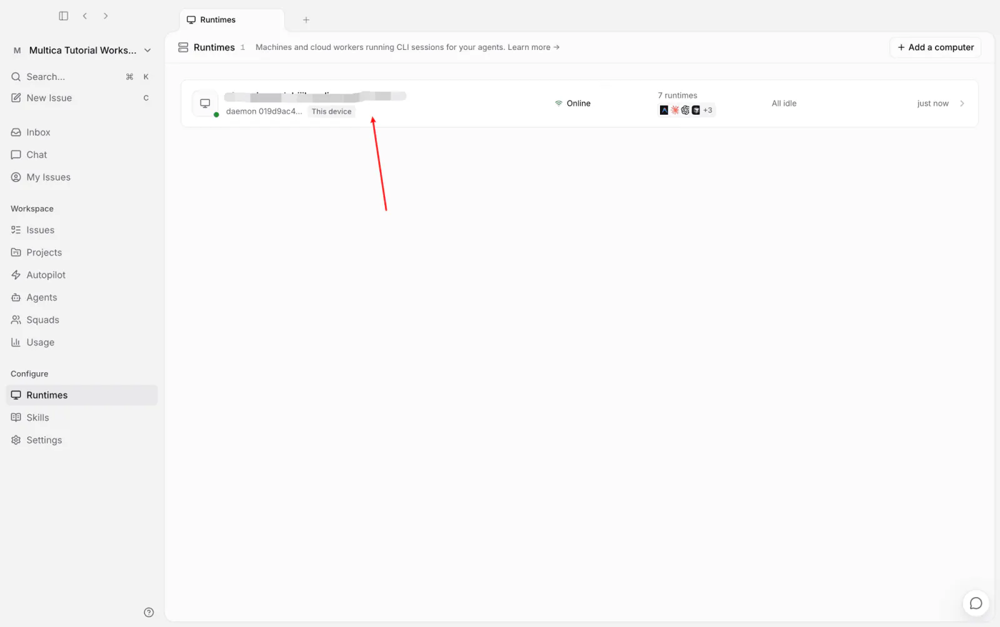 |
| reference：添加一台机器 | reference：Agent 访问与工具权限 |
|---|---|
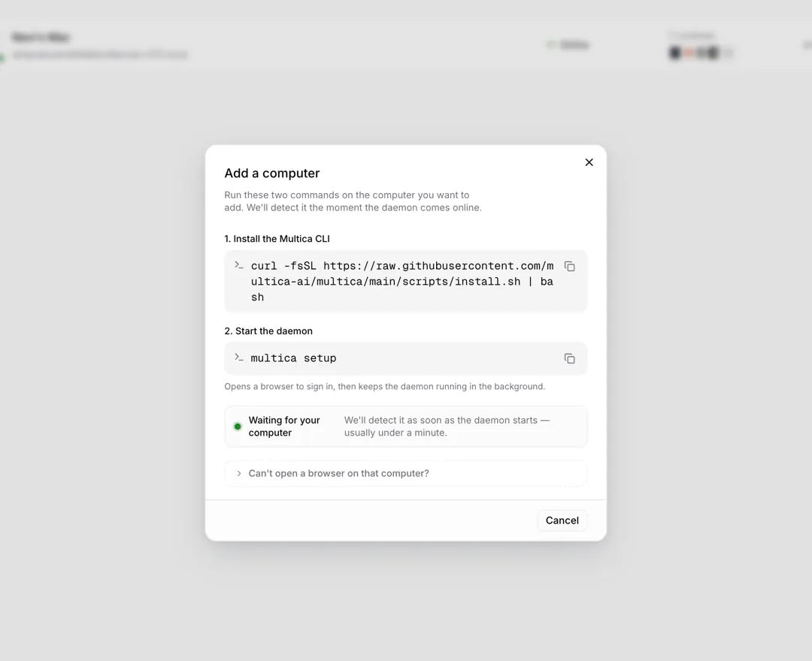 |
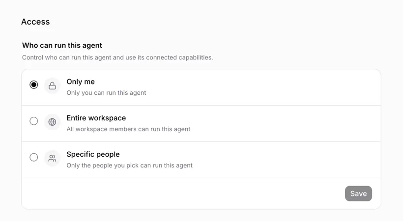 |
| reference：创建 Agent（选运行时 + 指令） | reference：机器详情（工具探测结果） |
|---|---|
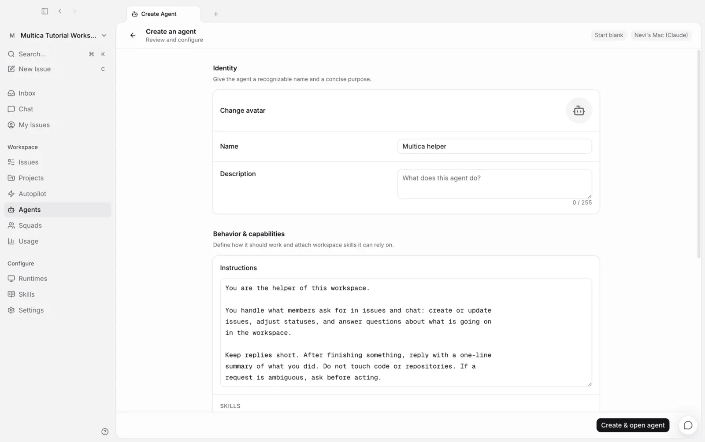 |
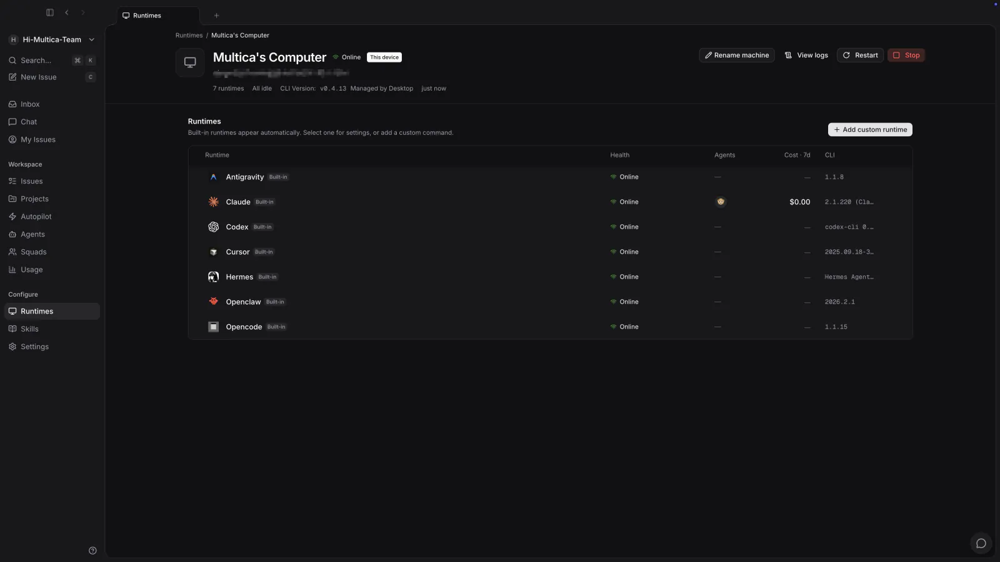 |
改进建议
1. P0｜把 A1 升级为 Runtime 模型：Runtime = host + cli + caps，Agent 挂 Runtime。这是 A2（远程）、Q1（能力矩阵）、Q2（隔离）共同的前置，改一次省三次。（已采纳：M1 实施）
2. P0｜探测量化：纳管时写回 caps{resume, mcp, model, skill_dir}，让 D2（能否注入）、B5（能否定时）按能力降级，而不是运行时才发现不支持。
3. P1｜别做账户热切换：reference 的 Claude/Codex 账号切换解决的是「用量打满」问题，本地单用户场景收益低，P2 再说。
B. TODO 与每日计划
| 能力 | reference | reference | 本项目 | 判定 |
|---|---|---|---|---|
| 任务字段 | ⚠️ 以 PR/issue 承载 | ✅ 标题/描述/验收/负责人/日期/标签/自定义属性 | ⚠️ B1 有字段，无自定义属性 | 补属性 |
| 看板 | ❌ | ✅ 列/泳道/排序/显示字段可配 | ⚠️ B4 有规格，未实现 | P0 |
| 视图保存 | ❌ | ✅ 保存视图 + 批量操作 | ❌ | P1 |
| 任务与运行分离 | ⚠️ 会话即任务 | ✅ 任务 1:N 运行 | ✅ 已实现（Run 独立） | 保持 |
| 每日计划 | ❌ | ⚠️ 靠自动化生成 | ✅ B3 三来源 | 保持 |
| reference：新建任务并选执行方 | reference：Agent 正在处理任务 |
|---|---|
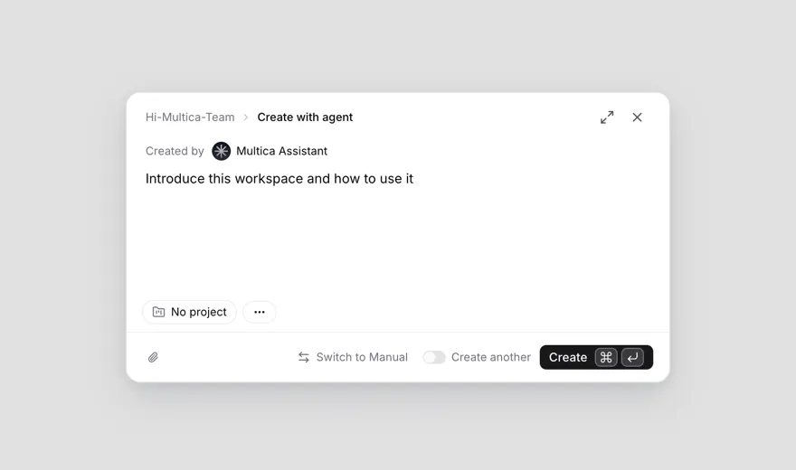 |
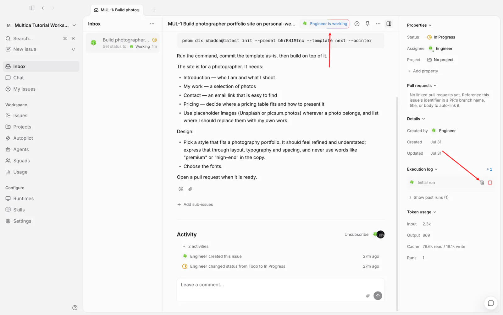 |
改进建议 1. P0｜看板先做「状态列 + Agent 泳道」两件事：reference 的视图配置（分组/排序/显示字段）很完整，但那是 P1；本项目 B4 的验收是「1 屏看清」，先满足它。 2. P0｜卡片就是操作台：reference 的卡片点开才是详情，本项目要求「卡片上暂停/纠偏/验收」，这是差异化，别抄成两跳。 3. P1｜自定义属性延后：B1 的标签 + 优先级够用；等真有人按「客户/产线」分组再加。
C. 分派
| 能力 | reference | reference | 本项目 | 判定 |
|---|---|---|---|---|
| 单播 | ⚠️ 在某个 worktree 里对话 | ✅ 指派给 Agent / 人 / 小队 | ✅ C1 | 保持 |
| 广播对比 | ✅ 一条 prompt 扇出 5 个 worktree，比完采纳 | ❌ | ⚠️ C2 有规格 | P0 |
| 队列与并发 | ⚠️ 手动开新 worktree | ✅ 每 Agent 并发 + 目录锁 | ✅ 已实现（队列/上限） | 补目录锁 |
| 依赖 | ❌ | ⚠️ 子任务/关联，非 DAG | ✅ C4（DAG + 无环） | 差异化 |
| reference：并行 worktree 对比 | reference：多 worktree 列表 |
|---|---|
 |
 |
| reference：指派确认（人 / Agent / 小队） | reference：新建任务时选 Agent 模式 |
|---|---|
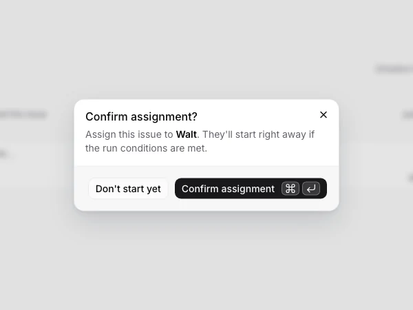 |
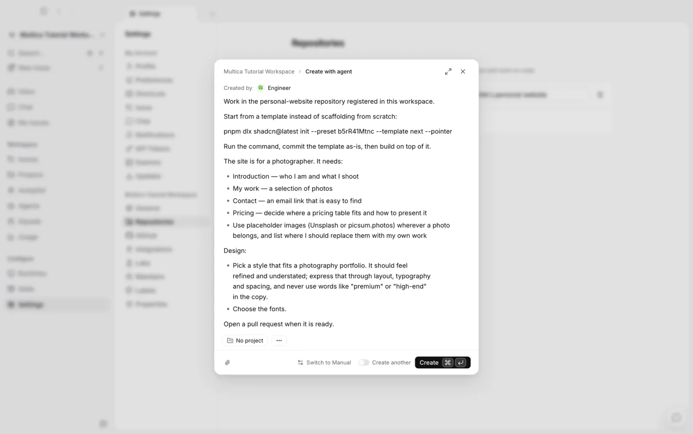 |
改进建议 1. P0｜C2 的对比要「并排 diff」而不是「并排会话」：reference 的价值在 diff 并列 + 采纳合并；只并列聊天记录等于让用户读两份日志。 2. P0｜采纳即收口：采纳后其余 run 置「已放弃」并保留产物（B2 已定义），这条比 reference 完整，别退化成「手动关掉」。 3. P1｜小队路由不放进 C：C 只做「任务→执行体」，小队属于 O4，避免分派逻辑过早耦合协作模型。
D. 对话与纠偏
| 能力 | reference | reference | 本项目 | 判定 |
|---|---|---|---|---|
| 任务内会话 | ✅ 原生 chat | ✅ 任务内对话 + 时间线 | ✅ D1 已实现（会话/日志） | 保持 |
| 运行中注入 | ⚠️ 终端里直接打字 | ✅ 「引导」抢占当前回合 | ✅ D2 已实现 | 补回执 |
| 排队消息 | ✅ 回复中继续发，自动排队 | ✅ 队列 + 清空 | ⚠️ 只做注入 | P1 |
| Agent 提问 | ❌ | ✅ 等待输入态 | ⚠️ D4 有规格 | P0 |
| 全局对话 | ✅ 任意页悬浮 chat（⌘J） | ✅ 悬浮 chat + 转任务 | ⚠️ D5 有规格 | P1 |
| reference | reference：任务内对话 |
|---|---|
 |
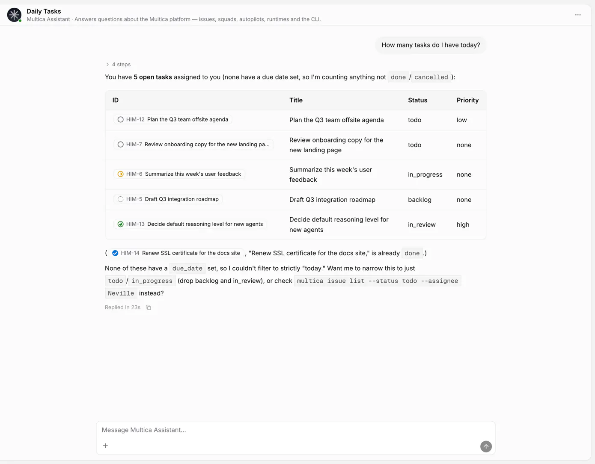 |
| reference：悬浮 chat | reference：执行转录 |
|---|---|
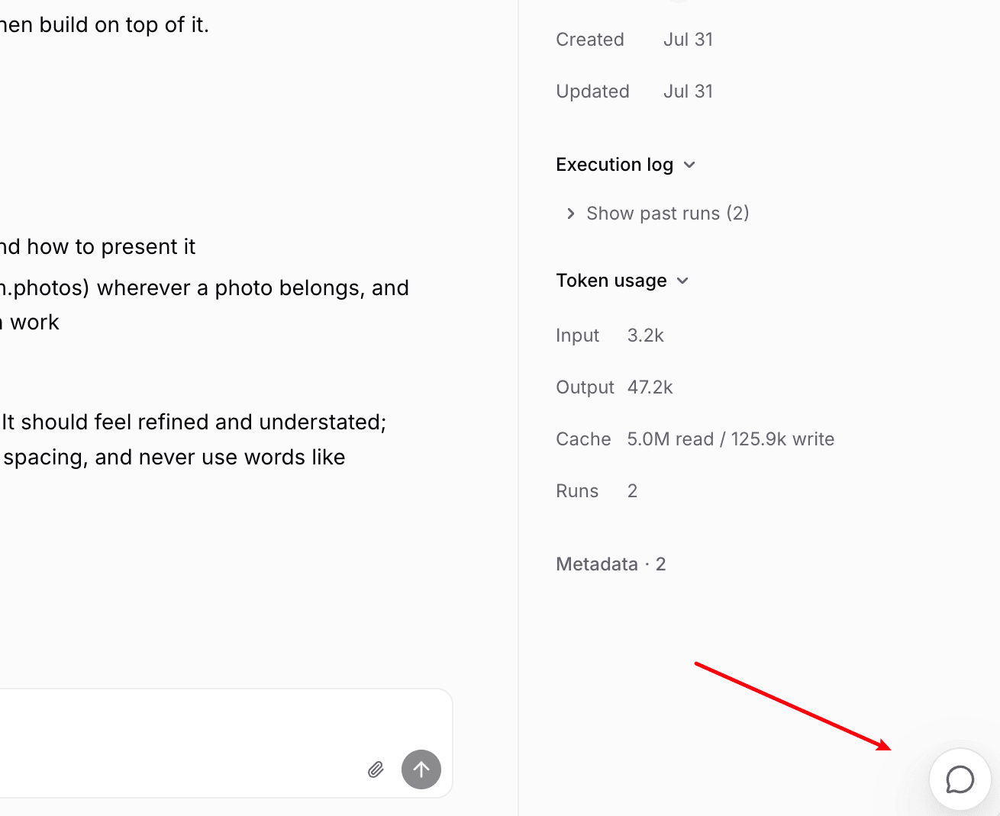 |
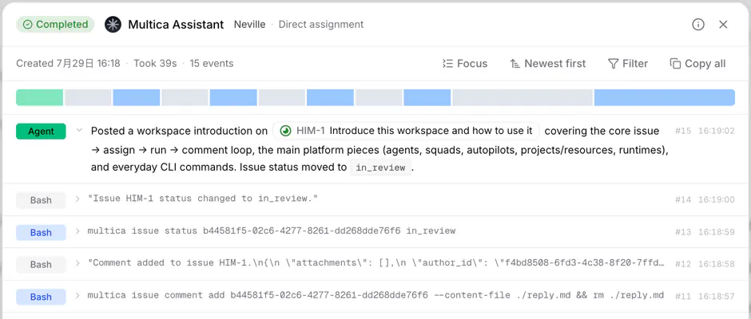 |
| reference：在任务里直接问 Agent | reference：拖文件 / 图片进 prompt |
|---|---|
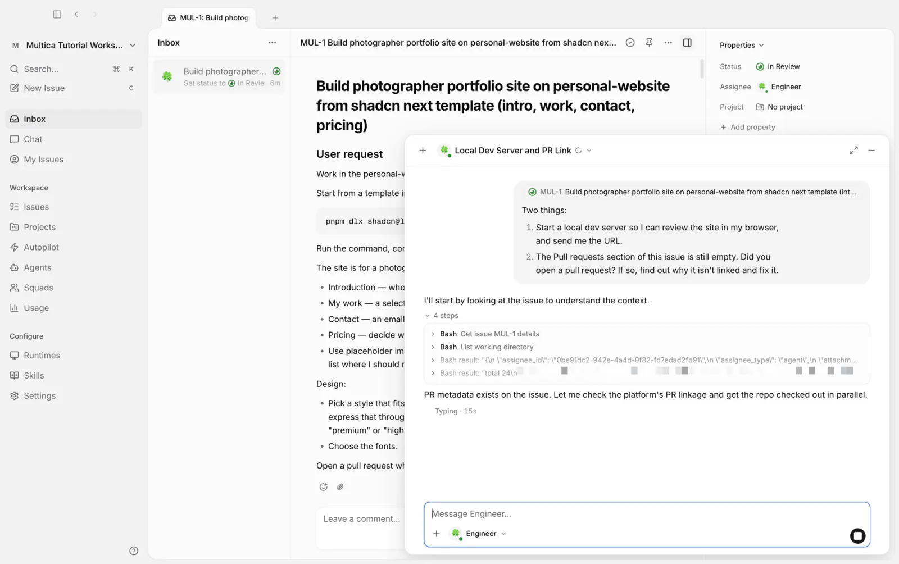 |
 |
改进建议 1. P0｜把「注入」和「排队」做成两个态：reference 的「引导」会抢占当前回合、队列消息等回合结束。本项目现在只有注入，用户看不到「已排队」，容易误判送达。 2. P0｜提问必须置顶：D4 是闭环里的「人等机器」分支，漏了它，run 会静默挂在那里直到超时。 3. P1｜全局对话先做「转成 TODO」：悬浮 chat 的入口价值在随手记，但要能一键落成任务，否则又变成第二个会话垃圾桶。
E. 进度、回写与通知
| 能力 | reference | reference | 本项目 | 判定 |
|---|---|---|---|---|
| 运行状态机 | ⚠️ 会话状态 | ✅ 8 态（deferred→running→completed…） | ✅ B2/E1（7 态） | 对齐 |
| 回写要求 | ❌ 无任务对象 | ✅ 状态 + 评论 + 产物 | ✅ E2 | 补校验 |
| 收件箱 | ✅ 通知 + 未读 | ✅ 收件箱 + 订阅 | ✅ 已实现 | 保持 |
| 失败分类 | ⚠️ 原样透出 | ✅ 认证/限流/超时/工具 | ❌ | P1 |
| 审计 | ⚠️ 无 | ✅ 用量 + 错误页签 | ⚠️ E4 有规格 | P1 |
| reference：一次运行的完整链路 | reference：执行日志 |
|---|---|
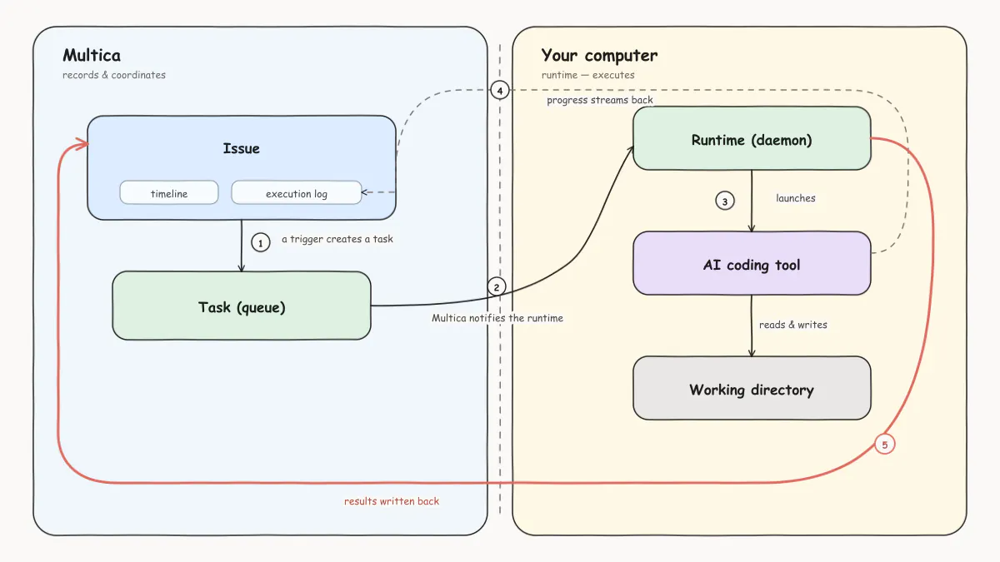 |
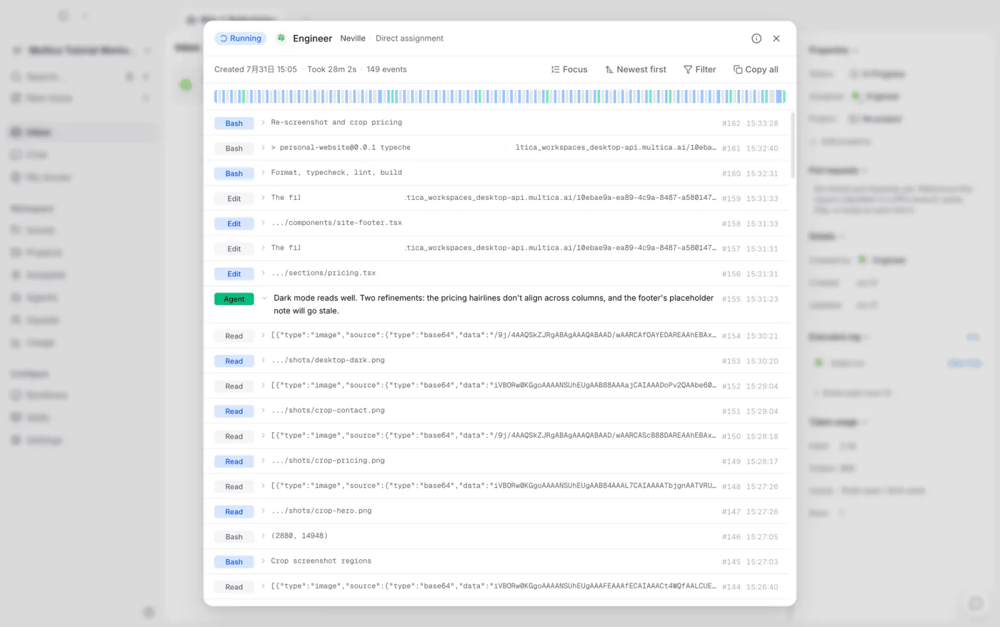 |
| reference：任务完成后（回写结果与产物） |
|---|
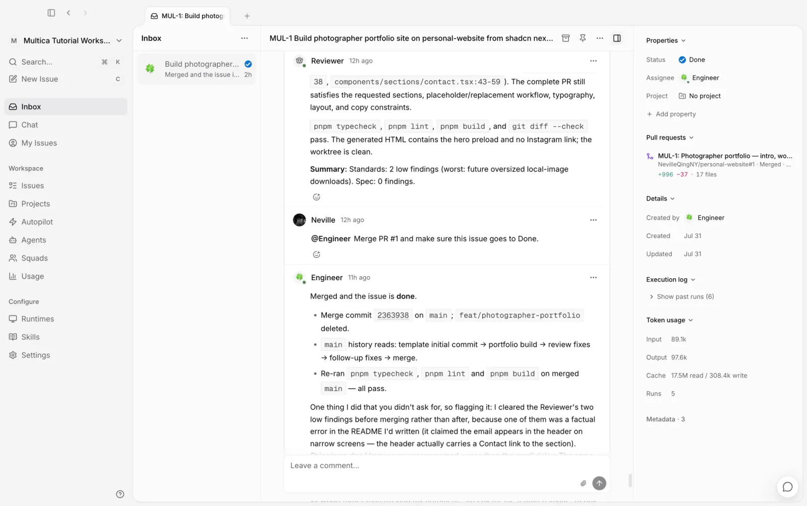 |
改进建议 1. P0｜E2 的「校验」要落到执行器退出路径：现在是「要求 Agent 自己回写」，reference 靠服务端收尾；本项目应在 run 结束时校验 状态+评论+产物，缺一标黄。（已采纳：写入 E2 与 §9 第 21 条） 2. P1｜通知只留 4 类：完成 / 失败 / 需要输入 / 被 @。reference 的订阅粒度更细，但会退化成「消息中心」，违背 E3。 3. P2｜不做逐步骤通知：reference 的通知是「Agent 完成」，这正是本项目要的对齐点；步骤级推送坚决不做。
F. 远程执行（SSH）
| 能力 | reference | reference | 本项目 | 判定 |
|---|---|---|---|---|
| 远程主机接入 | ✅ SSH + 自动重连 + 端口转发 | ✅ 守护进程（一次性 token） | ❌ | P0 |
| 远程工作目录 | ✅ 远程 worktree | ✅ 运行目录 + 目录锁 | ⚠️ F2 有规格 | P1 |
| 断线恢复 | ✅ 会话/终端恢复 | ✅ 排队等待、不重复执行 | ⚠️ F3 有规格 | P0 |
| 配置可见 | ✅ 图形化添加 | ✅ 机器详情 + 在线态 | ❌ | P1 |
| reference：SSH 远程 worktree | reference：添加远程服务端 |
|---|---|
 |
 |
| reference：按工作区选择运行位置（本地 / 远程） |
|---|
 |
改进建议
1. P0｜先做「一次性 token 安装 + 心跳」，不要先做 SSH 密钥管理：reference 的路径证明更省事，用户只需要粘一条命令；SSH 凭据留到 P2。
2. P0｜远程必须与本地同一套分派/纠偏/回写（§9 第 13 条），否则 F 会退化成「另一套系统」。
3. P1｜端口转发别自己写：用 ssh2 现成能力；reference 的 remote-server-share-desktop 是「共享桌面」，与本项目无关。
G. 工作区布局
| 能力 | reference | reference | 本项目 | 判定 |
|---|---|---|---|---|
| 固定布局 | ✅ 侧栏 + 标签 + 无限分屏 | ✅ 左栏 + 主区 + 右栏，可折叠 | ⚠️ 三栏已实现 | 补折叠/保存 |
| 布局保存 | ✅ 每工作区独立标签组 | ⚠️ 记住宽度 | ⚠️ G1 有规格 | P1 |
| 命令面板 | ✅ ⌘K / ⌘J | ✅ ⌘K + 快捷键表 | ⚠️ G4 有规格 | P1 |
| 终端 | ✅ Ghostty 级 WebGL | ❌ | ❌ | 不建议做 |
| reference：分屏与标签 | reference：工作区总览 |
|---|---|
 |
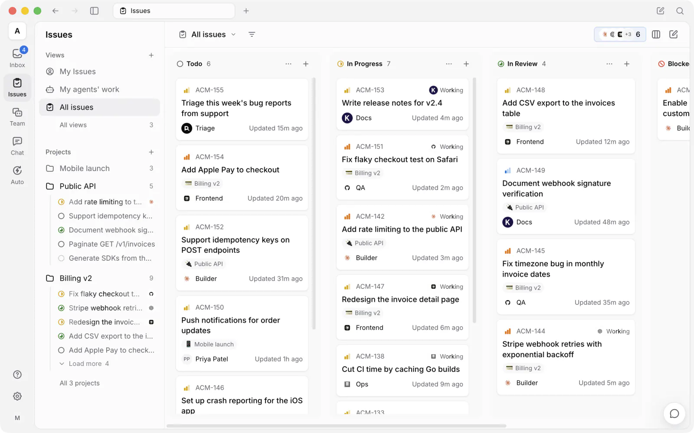 |
改进建议 1. P1｜只做「折叠 + 命名保存」，不做自由 dock：G1 已收敛，reference 的分屏成本极高（终端渲染、会话恢复一堆坑）。 2. P1｜命令面板优先于快捷键自定义：先把「切视图 / 派活 / 纠偏」三个动作做成命令，快捷键自然挂上去。 3. P2｜不做终端：日志走只读流；真要交互，交给 IDE。
K. 上下文桥（harness ↔ IDE）
| 能力 | reference | reference | 本项目 | 判定 |
|---|---|---|---|---|
| 结构化 context 入 prompt | ✅ Design Mode 抓 DOM/CSS/截图 | ⚠️ 任务描述 + 项目说明 | ⚠️ K1 有规格 | P0（差异化） |
| 用户可见/可钉住 | ⚠️ 截图即上下文 | ❌ | ⚠️ K3 有规格 | P1 |
| 离线保留 | ❌ | ❌ | ⚠️ K3 stale | 差异化 |
| reference：Design Mode 选中元素送进 prompt | reference：内置浏览器上下文 |
|---|---|
 |
|
改进建议
1. P0｜K1 的 envelope 必须带版本号：IDE 与 harness 独立发版，字段只会加不会减，没有 schemaVersion 就会在客户机上炸。
2. P1｜「可见」比「自动」重要：K3 要求注入内容在消息里展示；reference 的做法是把截图直接贴进 prompt，用户天然可见——本项目要在消息里渲染 context 卡片。
3. P1｜stale 不做 TTL：保留最后一次直到 IDE 重新上报，比「5 分钟后失效」更符合现场使用。
L. Agent ↔ 域工作区接口
| 能力 | reference | reference | 本项目 | 判定 |
|---|---|---|---|---|
| CLI 读写控制台 | ✅ reference worktree/snapshot/click/fill |
✅ reference issue/run/comment |
⚠️ L1 有规格 | P0 |
| 产物登记 | ❌ 以 git 为准 | ✅ 评论附件 + PR 关联 | ⚠️ L3 有规格 | P0 |
| 脚本化编排 | ✅ orchestration API | ✅ CLI + Webhook | ⚠️ T4 有规格 | P2 |
| reference：CLI 驱动控制台 | reference：CLI 文档（无 UI 截图） |
|---|---|
 |
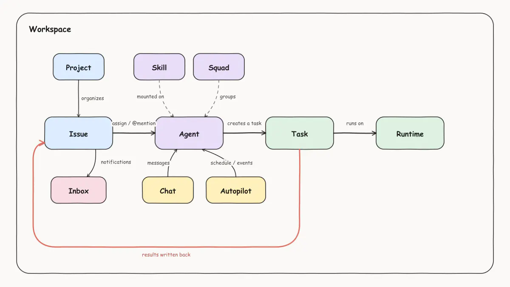 |
改进建议
1. P0｜CLI 先于 UI：todo claim/status/comment/artifact link 是 Agent 回写的唯一通道，比任何面板都优先。
2. P0｜命令要幂等 + 带 run 作用域：run_id 由环境变量注入，避免 Agent 猜错目标（reference 用运行级 token 做同样的事）。
3. P1｜context get 返回结构而非文本：同时给 stale 与 schemaVersion，Agent 才能判断要不要追问。
M. IDE 交接
| 能力 | reference | reference | 本项目 | 判定 |
|---|---|---|---|---|
| 产物预览 | ✅ Markdown/图片/PDF/仓库文档 | ✅ 附件与 PR 卡片 | ⚠️ M3 有规格 | P1 |
| 深链打开 | ✅ 从 PR/issue 开 worktree | ⚠️ 链接到 PR | ⚠️ M1 有规格 | P1 |
| 归属追溯 | ⚠️ 以 git blame 为准 | ✅ 关联 PR → 任务 | ⚠️ M4 有规格 | P0 |
| reference：仓库内 Markdown 预览 | reference：任务关联 PR |
|---|---|
|
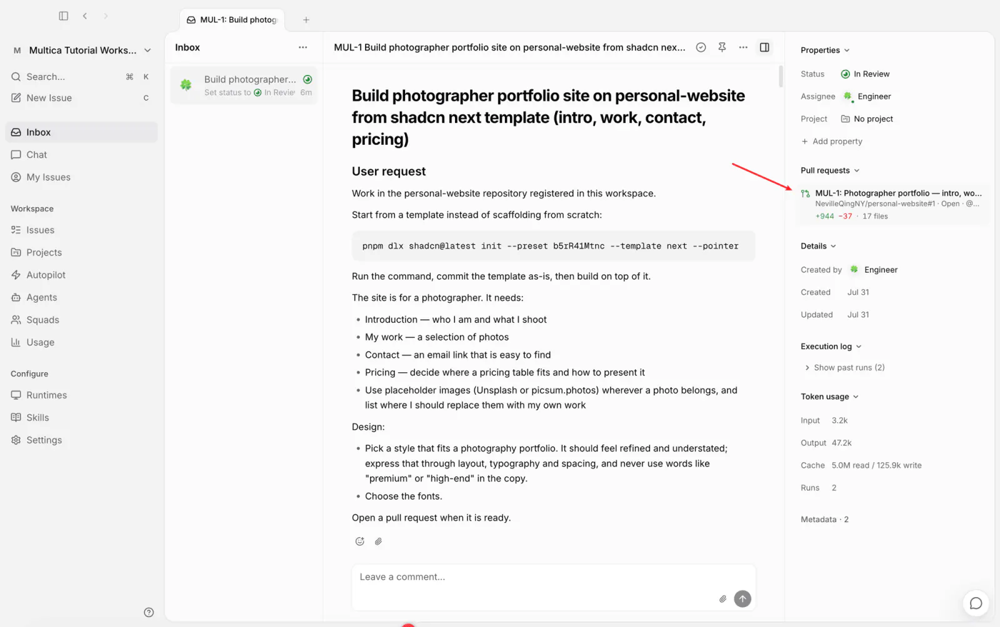 |
改进建议
1. P0｜深链先做「有 id 就能开」：yieldmind-ide://open?path=&selection=&todo= 三个参数足够；不要等 IDE 侧全部就绪。
2. P1｜预览只做缩略 + 元数据：reference 的预览是编辑器级（能改），本项目只读，别跟着做渲染内核。
3. P1｜PR 关联优先于「自动 diff 摘要」：先把「产物→run→todo」链路打通，摘要可以手写。
N. 任务协作（评论 / @ / 快捷操作）
| 能力 | reference | reference | 本项目 | 判定 |
|---|---|---|---|---|
| 评论线程 | ✅ Diff 行内批注 | ✅ 线程 / 解决 / 表情 | ❌ | P0 |
| @ 路由 | ⚠️ 仅通知 | ✅ 成员/Agent/小队/任务/@all 五种语义 | ❌ | P0 |
| 快捷操作 | ❌ | ✅ 保存请求 + / 调用 |
❌ | P1 |
| 附件版本 | ❌ | ✅ 同名归并 | ❌ | P1 |
| reference：评论 @ 审查者 | reference：@ 触发预览 |
|---|---|
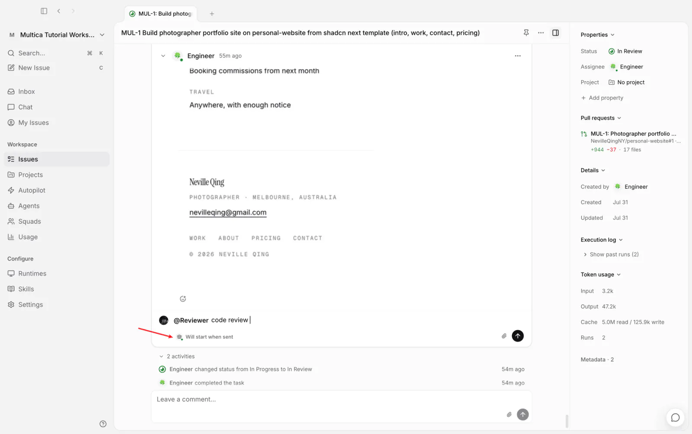 |
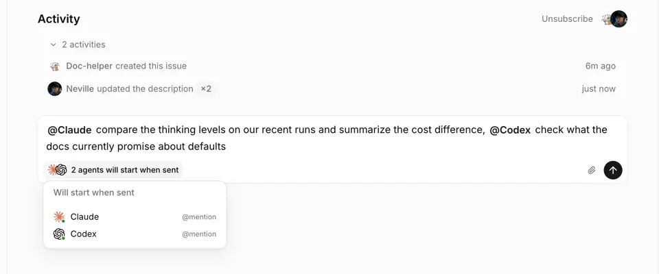 |
| reference：Diff 行内批注 | reference：审阅评论 |
|---|---|
 |
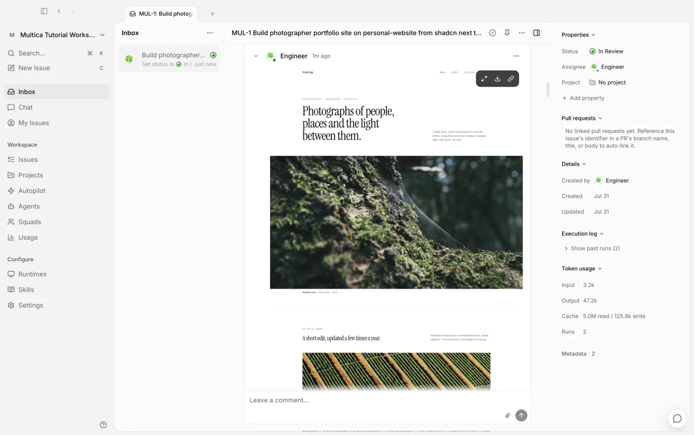 |
改进建议
1. P0｜先做「@Agent 起 run」一条：这是 N 模块唯一直接产生执行的动作；评论线程、表情、解决讨论可以晚一轮。（已排期：N2 进 M1，其余进 M5）
2. P0｜@ 语义必须写死：reference 的五种目标里，@任务 只插链接、@all 不触发 Agent——这两条最容易做错，会造成误触发。
3. P1｜快捷操作与模板合一：本项目 B3 已有「模板生成」，N3 直接复用模板表，不新造对象。
O. 项目、工作流与小队
| 能力 | reference | reference | 本项目 | 判定 |
|---|---|---|---|---|
| 项目对象 | ❌（用 GitHub/Linear 项目） | ✅ 状态/优先级/负责人/日期/进度 | ❌ | P1 |
| 项目资源 | ✅ worktree 即资源 | ✅ 仓库 ref / 本地目录 | ⚠️ O2 有规格 | P1 |
| 阶段工作流 | ⚠️ PR 流转 | ✅ 阶段 + 每阶段处理方 | ❌ | P1 |
| 小队 | ❌ | ✅ 队长路由 + 花名册 + 再触发规则 | ❌ | P1 |
| reference：项目详情 | reference：小队详情 |
|---|---|
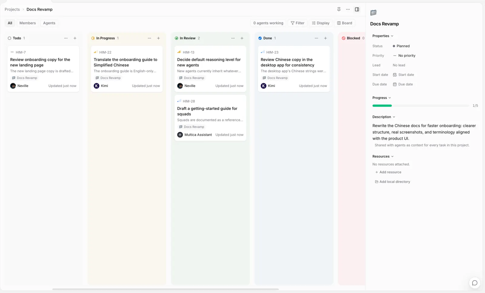 |
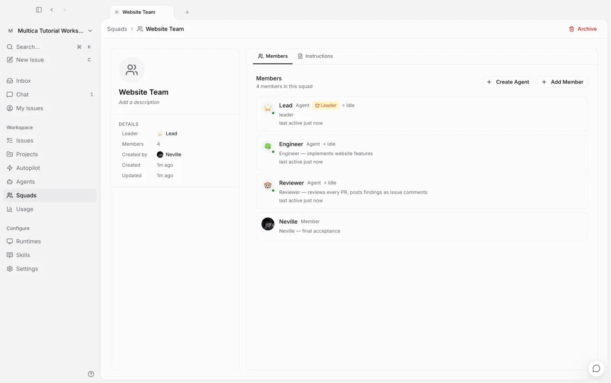 |
| reference：GitHub / Linear 原生看板 | reference：小队派活 |
|---|---|
 |
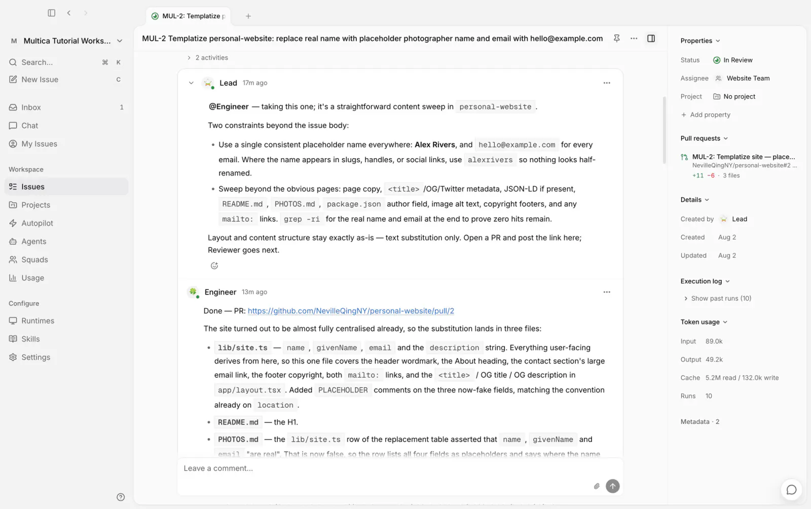 |
改进建议 1. P1｜项目只做「分组 + 资源 + 进度」，不做独立生命周期（O1 的状态先借用 TODO 的）。 2. P1｜工作流只做「顺序阶段 + 交接」：reference 的完整工作流有退回/跳过/条件，先实现开发→审查→验收三阶段即可。 3. P2｜小队先做「队长一人分派」：花名册、角色说明、再触发规则都是锦上添花；没有多 Agent 团队前，C2 广播已够用。
P. 技能与自动化
| 能力 | reference | reference | 本项目 | 判定 |
|---|---|---|---|---|
| 技能包 | ✅ CLI skills | ✅ 建/导入/挂载/启停 | ⚠️ A3 只有 skills 字段 | P1 |
| 定时自动化 | ✅ automations | ✅ Autopilot（cron + 时区） | ⚠️ B5 | 合并 |
| Webhook 触发 | ⚠️ CLI | ✅ + 事件过滤 + 验签 | ❌ | P2 |
| 条件唤醒 | ❌ | ✅ 9 类条件 + 重复上限 | ❌ | P2 |
| reference：Skills 列表 | reference：Autopilot 创建 |
|---|---|
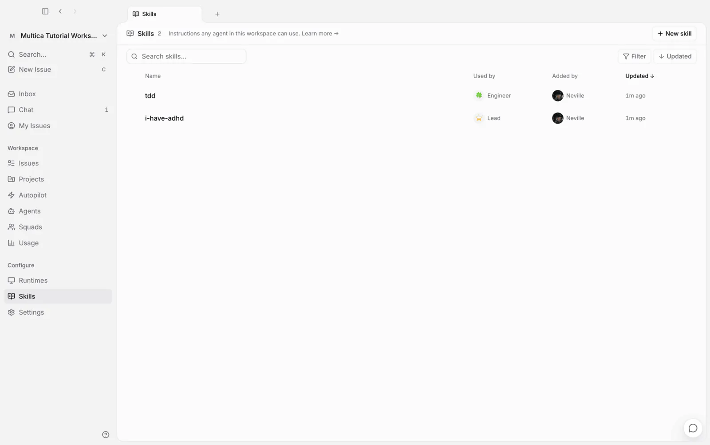 |
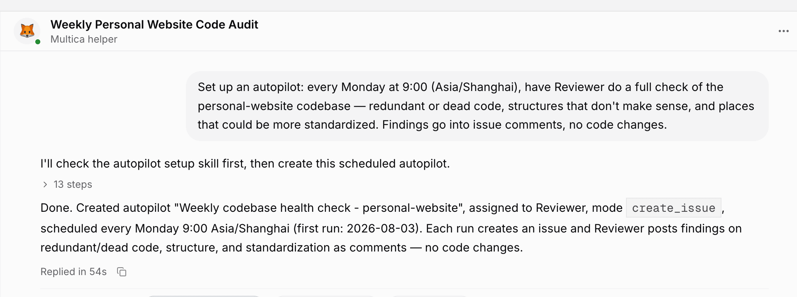 |
| reference：定时配置（显式时区） | reference：技能详情 |
|---|---|
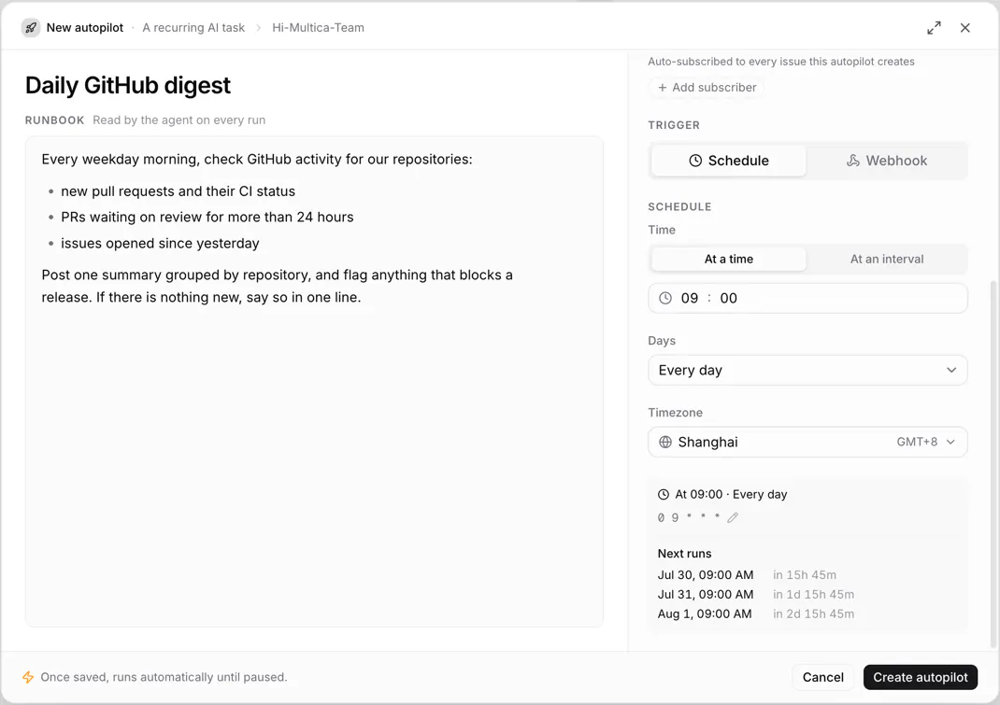 |
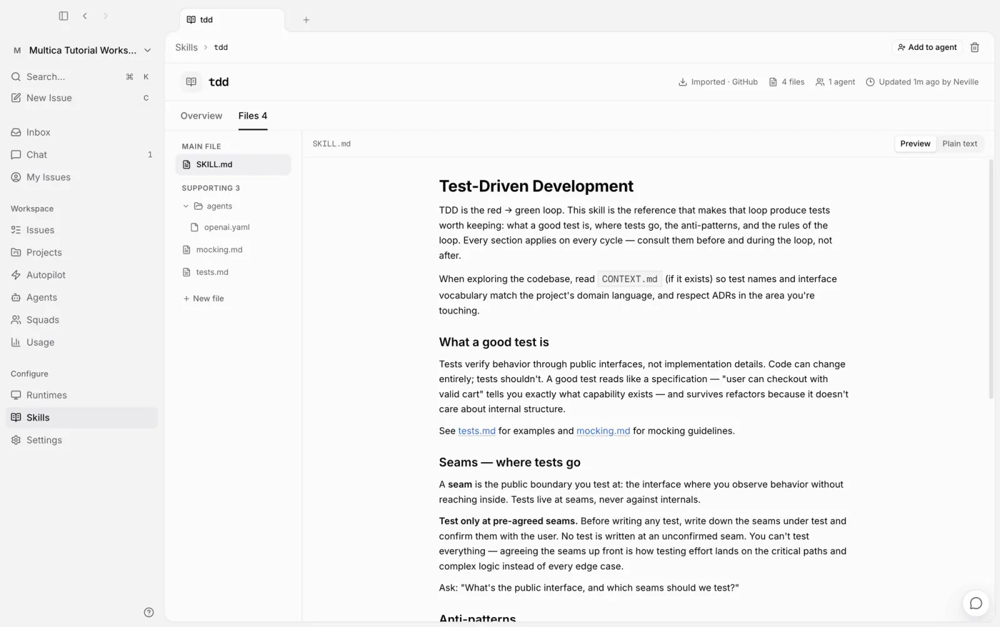 |
改进建议
1. P1｜P2 与 B5 合并成一张表：Autopilot = 定时任务 + runbook + 输出模式。（已采纳：B5 只留 at / after，cron 归 P2）
2. P1｜技能先做「目录挂载」：<repo>/.harness/skills/* 直接注入，不建管理界面；reference 的四路导入是生态需求，单机不需要。
3. P2｜唤醒条件砍到 3 类：时间 / 有人回复 / run 结束。其余 6 类等有真实需求再加。
Q. 运行时与执行治理
| 能力 | reference | reference | 本项目 | 判定 |
|---|---|---|---|---|
| 能力矩阵 | ⚠️ 启动探测 | ✅ 对照表（恢复/MCP/模型/skill 目录） | ❌ | P1 |
| 执行隔离 | ✅ 每 worktree 独立 | ✅ 独立 workdir/HOME/token | ⚠️ Q2 有规格 | P0 |
| 用量与成本 | ✅ 限额进度条 | ✅ token/费用/耗时/失败数 | ❌ | P1 |
| 错误分类与重试 | ⚠️ 原样报错 | ✅ 5 类 + 错误码 + 重试 | ⚠️ 有重试无分类 | P1 |
| 并发与超时 | ⚠️ 手动 | ✅ 排队原因可见 | ✅ 已实现（并发上限） | 补原因 |
| reference：账号用量与限额 | reference：机器与运行时详情 |
|---|---|
 |
改进建议 1. P0｜Q2 先做「每 run 独立目录 + 运行级 token」：这是安全边界，也是 C2 广播能成立的前提（现状是同目录串行）。 2. P1｜错误分类只做 4 类：认证 / 限流 / 超时 / 其他。reference 的 5 类里「工具」可以先并入「其他」。 3. P1｜用量先记 token，不算钱：费用算法依赖各家定价，容易过期；先展示 token 与耗时，费用 P2。
R. 工作树与代码审阅
| 能力 | reference | reference | 本项目 | 判定 |
|---|---|---|---|---|
| 每 run 独立 worktree | ✅ 核心能力 | ✅ 独立 workdir | ❌ | P0 |
| 并行对比与采纳合并 | ✅ 扇出 → 比 → 合并 | ⚠️ 无对比 | ⚠️ C2/R2 有规格 | P0 |
| 行内批注回传 | ✅ 批注 → 回给 Agent | ⚠️ 评论（非行级） | ⚠️ R3 有规格 | P1 |
| 提交/推送/PR | ✅ 内建 | ✅ 分支 + leftovers ref | ⚠️ R4 有规格 | P1 |
| 变更归属 | ⚠️ git blame | ⚠️ 分支级 | ⚠️ R5 有规格 | P2 |
| reference：并行 worktree | reference：Diff 行内批注 |
|---|---|
 |
 |
| reference：拖文件进 Agent | reference：仓库/资源设置 |
|---|---|
 |
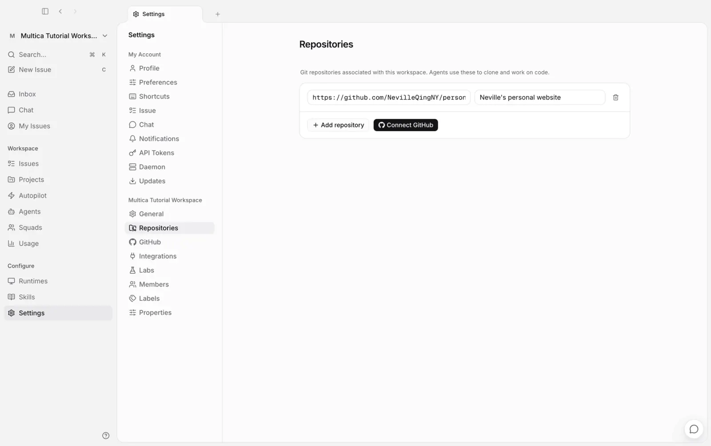 |
改进建议 1. P0｜R1 是 C2 的硬前置：没有独立 worktree，「广播对比」和「同目录串行」只能二选一。（已采纳：R1 并入 M1，C2 留 M3） 2. P0｜未提交产物存隐藏 ref（reference 的 leftovers 做法）：Agent 经常不 commit，直接丢弃会丢产物，直接进分支会污染历史。 3. P2｜批注先不做行级：R3 可以先用「文件级评论」过渡，行级定位需要 diff 内核，成本高。
S. 通知与检索
| 能力 | reference | reference | 本项目 | 判定 |
|---|---|---|---|---|
| 通知中心 | ✅ 完成提醒 + 未读标记 | ✅ 收件箱 + 订阅 + 分类开关 | ⚠️ E3 有收件箱 | 补分类 |
| 全局搜索 | ✅ ⌘K（worktree/文件/命令） | ✅ ⌘K（页面/命令/成员/任务，支持拼音） | ❌ | P1 |
| 快捷键 | ✅ 可自定义 | ✅ 固定表 | ⚠️ G4 | P1 |
| 活动流 | ✅ 按仓库/任务 | ✅ 时间线 | ❌ | P2 |
| reference：⌘K 跳转 worktree | reference：成员与权限 |
|---|---|
 |
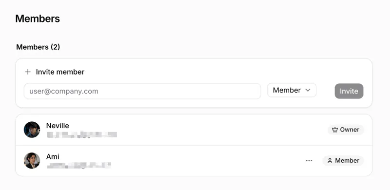 |
改进建议 1. P1｜搜索先做「任务 + 评论」两域：拼音匹配是 reference 的亮点，但可以用 SQLite FTS + 拼音表低成本实现。 2. P1｜⌘K 先做命令，不做全文：切视图 / 派活 / 纠偏三个命令的收益远高于搜历史评论。 3. P2｜不做活动流：看板 + 收件箱已经承载「发生了什么」，再做一个时间线是重复。
T. 集成与客户端
| 能力 | reference | reference | 本项目 | 判定 |
|---|---|---|---|---|
| 代码托管 | ✅ GitHub / Linear / Jira | ✅ GitHub + Gitea/GitLab | ⚠️ T1 有规格 | P2 |
| 聊天 Bot | ❌ | ✅ Slack/飞书/钉钉/企微/Telegram | ⚠️ T2 有规格 | P2 |
| 移动端 | ✅ 通知 + 追问 | ✅ iOS | ⚠️ T3 有规格 | P2 |
| CLI 自动化 | ✅ reference CLI |
✅ reference CLI |
⚠️ T4 有规格 | P2 |
| 多用户/权限 | ⚠️ 单机 | ✅ 工作区 + 三角色 | ⚠️ T5 有规格 | P2 |
| reference：GitHub / Linear 原生 | reference：工作区归属（站点） |
|---|---|
|
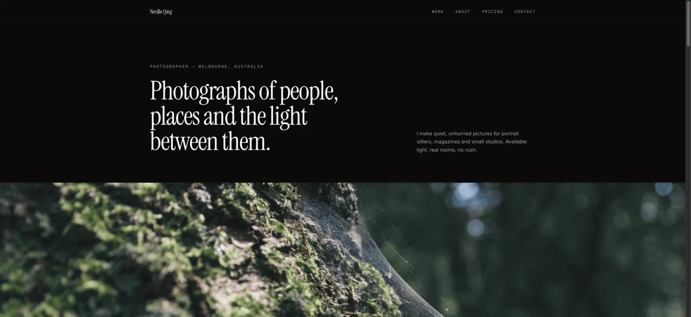 |
| reference：在对话里建仓库并接手 |
|---|
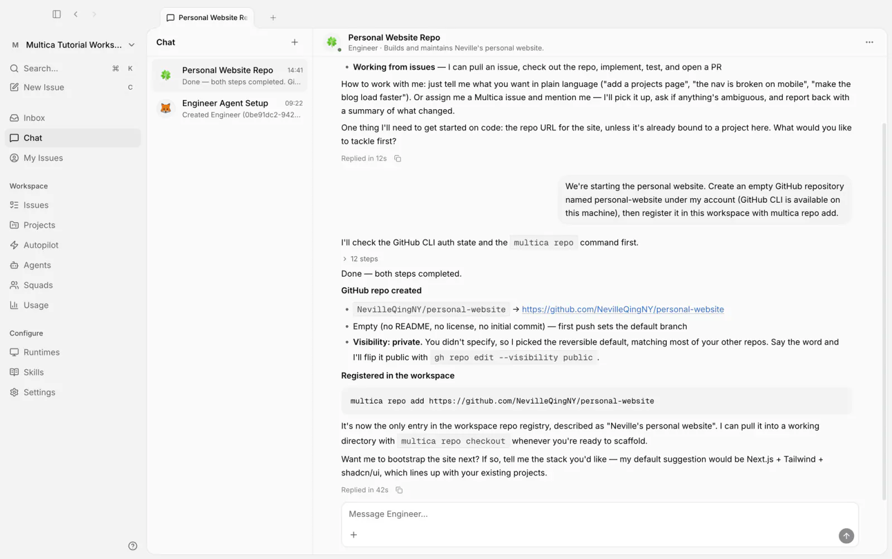 |
改进建议 1. P2｜集成从「PR 关联」单点切入：先做「任务关联 PR + 合并后改状态」，这是 T1 里唯一直接影响闭环的部分。 2. P2｜Bot 只做一个平台：选团队实际在用的那个（内部大概率是飞书），其余留在规格里。 3. P2｜移动端只做「看 + 追问」：reference 的移动端定位就是通知+steer，不要试图在手机上编排。
附：不建议抄的能力
| 能力 | 归属 | 原因 |
|---|---|---|
| 终端分屏 / WebGL 渲染 / 会话恢复 | reference | 与「编排控制台」定位冲突，成本极高 |
| 内置浏览器 / Design Mode | reference | 本项目由 IDE 承载域面板与选区 |
| 代码编辑器 / Monaco 全功能 | reference | 只保留只读 Diff 与外部打开 |
| 插件宿主沙箱 / 主题包 | reference | 面板契约已降为 P2 |
| 多租户 SaaS / Docker 自托管 | reference | 主形态是本地单用户安装包 |
| 逐步骤通知 / 复杂订阅规则 | reference | 与 E3「只在需要决策时打扰」冲突 |
原话拆解与修改建议
项目起点的原话拆解，仅作追溯。
| 序号 | 需求 | 修改建议 |
|---|---|---|
| 1 | 多 Agent 编排控制台：把每天的任务规划、分发、进度监控、实时纠偏串成闭环 | 拆成三条可验收流程（早会 / 纠偏 / 收工），每条定指标（≤5 分钟派完、≤10 秒送达纠正、1 屏看清状态） |
| 2 | 统一管理多个 Agent，含本地与 SSH 远程 | 远程与本地同级：同一套分派、纠偏、回写；补心跳、并发上限、审批策略、工具白名单 |
| 3 | 统一对话与调度：同一界面给不同 Agent 发指令、回答问题、纠正方向 | 纠偏必须进入运行中的 run，在最近 step 边界送达并留回执；不要排到下一轮 |
| 4 | 支持把任务分发给多个 Agent 执行 | 区分单播 / 广播 / 排队；广播按 worktree 隔离，产出并列对比、用户采纳其一 |
| 5 | 每日 TODO List 工作流：TODO 发给对应 Agent，看板看进度与状态，实时纠偏 | 补状态机（待办→排队→进行中→等待输入→待验收→完成/取消）、每日计划三来源、定时任务显式时区 |
| 6 | 聊天窗口可纠正 | 与第 3 条合并为同一个 steer 能力，避免两套写入路径 |
| 7 | Agent 跑完可以回应 TODO | 强制回写：状态 + 结论 + 产物（分支/PR/文件/测试），未回写视为未完成并标黄 |
原话中两处
4）为编号笔误，已按语义拆为第 5、6 条。
scripts/build-docs-html.py 生成：源文件
docs/REQ-multi-agent-workspace.md + docs/CMP-modules-reference-reference.md +
docs/REQ-original.md。截图取自 reference / reference 官方文档，仅作内部对比。